2 Hoofdstuk 2 - De Normaalverdeling.
2.1 Scores zijn verdeeld, verschillende vormen van verdelingen.
Als je heel vaak met een dobbelsteen gooit, weet je dat je ongeveer even vaak alle mogelijke scores zult gooien, de zes verschilllende ‘gebeurtenissen’ ( elk van de zes verschillende aantal ogen op een dobbelsteen) zullen even vaak voorkomen. Omdat de kans op - of de frequentie van - elke gebeurtenis even groot zal zijn, zeggen we ook wel dat de dobbelsteen univorm verdeeld is. Gelijke kansen voor elke waarde van \(X\), bij een zuivere of eerlijke dobbelsteen, is die kans op elke specifieke waarde (\(X=1\), \(X=2\), \(X=3\), \(X=4\) \(X=5\) of \(X=6\)), \(1\) op \(6\) \(\left(\frac{1}{6} = .1667\right)\). Hieronder zie je de verdeling voor de scores van de variabele \(X\), de zes mogelijke waarden op een dobbelsteen. Je ziet dat boven elke waarde een vierkantje ligt die allemaal dezelfde oppervlakte hebben en die oppervlaktes staan voor de kans (probability) op onderliggende gebeurtenis. De oppervlakte van de zes vierkantjes samen is gelijk aan \(1\), en aangezien alle blokjes een gelijke oppervlakte hebben, moet een vierkantje dus een oppervlakte hebben van \(\frac{1}{6} = .1667\).
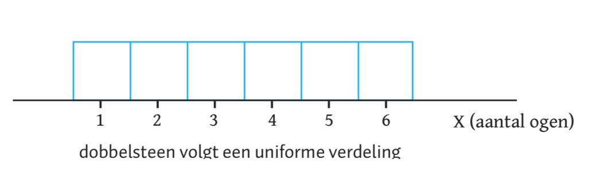
Figuur 2.1: De Uniforme verdeling voor een dobbelsteen.
Zo is de kans dat je bijvoorbeeld de waarde ‘\(X = 3\)’ gooit met een dobbelsteen dus gelijk aan \(\frac{1}{6}\) of wiskundig schrijven we dan het volgende op:
\[P(X = 3) = \frac{1}{6}\]
Maar hoe zit dat met vorm van de kans-verdeling van de scores zoals voor belminuten, iemands lengte of iemands intelligentie, gemeten IQ-scores? Is de kans dat iemand \(170\) centimeter is net zo groot als de kans op iemand die \(210\) centimeter is? Komen deze gebeurtenissen net zo vaak voor, hebben ze dezelfde kans van optreden? Zijn er op deze wereld net zoveel reuzen als gemiddelde mensen? Het mag misschien duidelijk zijn dat de scores voor lengte niet uniform verdeeld zijn. De verschillende waarden die je tegenkomt, komen niet allemaal even vaak voor, sommige waarden of observaties kom je vaker tegen dan anderen. Mensen met ongeveer een gemiddelde lengte, zeg \(170\) cm zijn talrijker dan met mensen met een extreme lengte (reuzen of lilliputters). De vorm van een kans verdeling vertelt ons dus hoe een bepaalde variabele zich gedraagt. Een dobbelsteen ‘gedraagt’ zich dus uniform. De vorm van zo’n verdeling hangt dus af van hoe een variabele zich gedraagt. Sommigen gebeurtenissen (voor een bepaalde variabele) gedragen zich ‘binomiaal’ en volgt de kans verdeling voor die variabele een binomiale kansverdeling. Bijvoorbeeld als je kijkt naar het totale aantal keer dat je ‘kop’ (\(X\)) gooit, als je tien keer met een muntje gooit. Je bent dus hier het aantal “hits” aan het tellen. Het moge duidelijk zijn dat het aantal mogelijke waarden (bij deze telling) bij dit spelletje beperkt is (en dus discreet is). Als laagste waarde kan je dus \(X=0\) hebben, als je dus nul keer kop gooit (beetje onwaarschijnlijk wel, maar er is toch een kleine kans dat je tien keer achter elkaar ‘munt’ gooit). Als hoogste waarde kun je dus \(X=10\) krijgen en dat zijn bij elkaar dus elf mogelijke uitkomsten (\(0\) t/m \(10\)) voor de variabele \(X\). Het aantal hits is altijd een discrete variabele omdat je bijvoorbeeld niet halve of nog kleinere hits hebt, je kan niet anderhalf keer kop gooienn als je tien keer gooit! Maar goed er zijn dus heel veel vormen van verdelingen (distributions) en bij sommige variabelen is die vorm van de verdeling niet eens te benoemen met een naampje. Als we naar continue varabialen kijken zoals lengte of gewicht is de binomiale verdeling in ieder geval geen optie, een uniforme verdeling soms, maar heel vaak lijkt het erop dat een variabele zich normaal gedraagt (daar is niks ‘normaals’ aan hoor, ook hier is het slechts een naampje voor een hele eigenaardige vorm!).
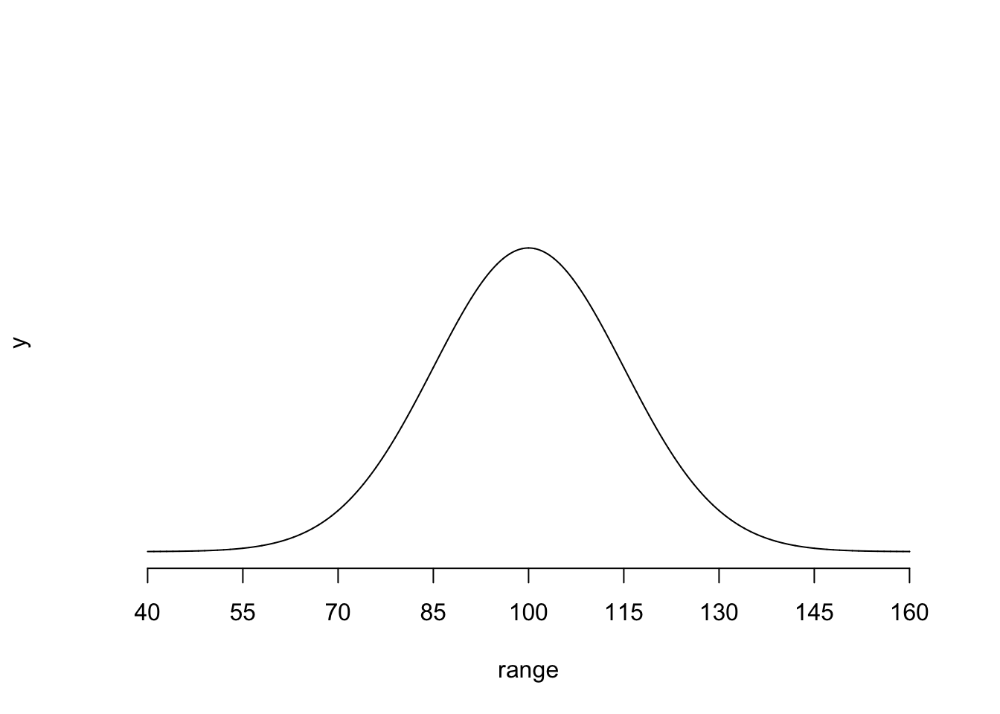
Figuur 2.2: De Normaalverdeling
2.2 De Normaalverdeling, Sommige Scores Volgen een Normaalverdeling
In de statistiek komen we (heel) vaak variabelen tegen die zogezegd ‘normaal’ verdeeld zijn (ik vind er niks ‘normaals’ aan hoor). Of we nemen in ieder geval aan dat die score zich normaal gedraagt in de populatie (je kunt het nooit écht weten toch?). Als een variabele qua kans (of frequentie) normaal verdeeld is, ‘gedraagt’ deze variabele zich dus ook volgens een bekend patroon, net zoals bij een uniforme verdeling, maar dan dus met een andere vorm: de zogenaamde klok-vorm ( bell-shape ) of klok curve (lijntje). Zoals bij een dobbelsteen bekend is dat deze zich uniform gedraagt, is bijvoorbeeld van IQ-scores bekend (nemen we aan) dat deze variabele zich ‘normaal’ gedraagt in de populatie met een gemiddelde van \(100\) (punten) en een standaardafwijking van \(15\) (punten). Sowieso kunnen we aan de hand van voorgaande hoofdstukken al stellen dat de beste gok voor een willekeurig persoon \(100\) IQ-punten is en dat men gemiddeld dus \(15\) punten van het gemiddelde verwijderd zit. Maar ómdat IQ-scores zich ‘normaal’ gedragen, kunnen we nog veel meer uitspraken doen. Omdat we weten (aannemen) dat de variabele IQ normaal verdeeld is, kunnen we voor elke willekeurige waarde of score uitrekenen hoeveel procent van de populatie boven of onder die waarde zou moeten vallen. We kunnen punten dus uitrekenen wat de kans is dat iemand links of rechtsin van een bepaalde waarde zal vallen. Zoals je bij een dobbelsteen kunt uitrekenen wat de kans is op \(3\) of \(4\) gooien (p(\(x = 3\) of \(x = 4\)) \(= \frac{2}{6} = .333\)), zo kun je nu bij IQ scores uitrekenen wat de kans is dat iemand een IQ heeft tussen de 120 en 130. We mogen deze berekeningen alleen doen als we ook daadwerkelijk mogen aannemen dat de variabele normaal verdeeld is. Vaak in onderzoek worden tal van berekeningen gedaan op basis van onterechte ‘normaliteits-’ aannames en worden dus conclusies getrokken die nooit hadden mogen worden gedaan. Ik zal je mijn frustraties hierover besparen en zo snel mogelijk verder gaan met een aantal verlichtende opgaven.
2.3 Opgaven Verdelingen
Opgave 1
Stel, ik ga naar mars en kom in gesprek met een marsmannetje. Hij heeft nog nooit kennis gemaakt met iets of iemand van de planeet aarde, het enige wat hij wel beheerst, is een gezonde dosis statistiek-kennis. Het enige dat ik hem uitleg, is dat IQ een maat is voor iemands intelligentie en dat een hogere score ook staat voor een hogere intelligentie en dat deze score een normaal verdeling volgt. Verder vertel ik hem dat mijn IQ-score 130 is. Wat kan het marsmannetje nu zeggen over mijn score (in relatie tot de rest van de mensen op aarde)?
Ok, dat was wel erg weinig informatie. Ik vertel hem nu ook dat het gemiddelde voor IQ-scores \(100\) is op aarde (\(\mu_x = 100\)). Welke informatie voegt het gemiddelde toe? Wat kan het marsmannetje nu zeggen over mijn score in relatie tot de rest van de wereld?
Uitwerking 1
Alleen aan een ruwe score als informatie hebben we helemaal niks. Niemand kan op basis van slechts deze informatie zeggen of dit een hoge of een lage score is. Wat betekent een score van \(130\) nou eigelijk? Om wel een antwoord hier op te kunnen geven heb je meer parameters nodig (die dus de rest van de bevolking ook beschrijven).
Door toevoeging van het gemiddelde en de informatie dat de score normaal verdeeld is, moet het marsmannetje wel weten dat we dus in de rechter helft van de verdeling vallen. Het gemiddelde is het midden en de score 130 bevindt zich daar rechts van. Het moet dus wel een hogere score zijn (ten opzichte van de ‘rest’). Maar hoe hoog, daar kunnen nu nog geen antwoord opgeven. Scores hebben of krijgen (vaak) alleen betekenis ten opzichte van elkaar, en zelfs dan is het echte verschil niet altijd duidelijk. Een IQ-score van \(128\) is lager dan \(130\), ja, zelfs twee punten om precies te zijn, maar om hoeveel hersencellen gaat het? Overigens, een niet onbelangrijk vraag hier: is IQ überhaupt wel te definiëren (in termen van aantal hersencellen)?
2.4 Variabelen in de Steekproef en Parameters in de Populatie
Nu vertel ik hem ook dat de standaardafwijking \(15\) (IQ-punten) is (\(\sigma_x = 15\). Aan de hand van deze informatie (gemiddelde, standaardafwijking, een bepaalde score voor \(X\) en de wetenschap dat deze variabele normaal verdeeld is) moet hij in staat zijn om precies uit te zoeken hoeveel procent van de bevolking dommer is (links van mij zit) en hoeveel procent slimmer is (rechts van mij zit) dan ik (met een IQ van \(X = 130\)). Dat is handige informatie, als je precies weet waar ik ten opzichte van de rest sta, dus mijn positie (op de getallenlijn) qua IQ-score ten opzichte van de rest van de mogelijke observaties in de wereld. Alleen aan de score \(X = 130\) hebben we dus niet genoeg om te kunnen zeggen of dit hoog of laag is. Om uit te zoeken hoeveel procent van de populatie boven of onder mij valt, waaruit we dus kunnen afleiden of ik hoog of laag zit, moeten we eerst de ‘ruwe’ score (\(X_{Benjamin}=130\)) ‘standaardiseren’ om vervolgens hierbij een ‘overschrijdingskans’ op te zoeken. De variabele IQ heb ik dus omgedoopt tot de variabele \(X\) en praat ik dus gewoon over de variabele ‘\(X\)’. In de komende opgave gaan we over tot ‘standaardisatie’ van de ruwe score \(X\) en gaan we bekijken hoeveel procent van deze wereld nou echt slimmer is dan ik. We gaan het op twee verschillende manieren oplossen. Eerst aan de hand van een aantal vuistregels (voor standaardafwijkingen bij een normaalverdeling), vooral om inzicht te vergaren wat hier aan de hand is en zodat je in de toekomst altijd een redelijke schatting kun maken voordat je echt gaat rekenen. De tweede manier is aan de hand van de standaard-normaal verdeling (ook wel de ‘z-tabel’ waarbij de \(Z\)-scores normaal verdeeld zijn), die ons een preciezere benadering geeft dan de vuistregels voor standaardafwijkingen bij een normaal verdeling.
Voordat we verder gaan, eerst nog even een stukje notatie. We hebben dus een variabele \(X\) die normaal verdeeld is in de populatie (we nemen dit dus even aan) met een gemiddelde van \(100\) en een standaardafwijking van \(15\). we kunnen dit ook korter noteren:
\[X \mathtt{\sim} N(\mu_x = 100 ; \sigma_x = 15)\] of nog korter (zonder de symbolen voor het gemiddelde en de standaardafwijking omdat we toch altijd eerst het gemiddelde en dan pas de standaardafwijking):
\[X \mathtt{\sim} N(100; 15)\] Je spreekt uit als: ‘De variabele \(X\) volgt een normaalverdeling met een gemiddelde van 100 en een standaardafwijking van 15’.
Of in het algemeen als je alleen maar wilt aan geven dat de variabele \(X\) normaal verdeeld is:
\[X \mathtt{\sim} N(\mu_x; \sigma_x)\] Eigenlijk omdat ik geen informatie heb gegeven over één enkele steekproef, maar over de gehele populatie, gebruiken heb ik dus geen statistieken voor het gemiddelde en standaardafwijking, maar parameters voor een beschrijving. En laten we wel wezen, niemand weet precies wat er in een populatie gebeurt. Wie weet er nou echt wat het gemiddelde voor IQ is als het gaat om de gehele populatie? Afgezien dat een populatie oneindig groot is, heb je nooit tijd en of geld om iedereen op de gehele wereld op te meten qua IQ-score om dan vervolgens het ware gemiddelde te berekenen. Ik zeg altijd maar zo (als geheugensteun): wij kunnen alleen maar dromen over het ware gemiddelde, laat staan uitrekenen. De Enige Echte die kan weten wat er zich echt afspeelt qua gemiddelde en standaardafwijking en dus de echte waarden ervan weet, is God. Ik als agnost (atheïst durf ik niet te hard te zeggen) vind dat behoorlijk vaag en wanneer iets vaag is, gebruik je ook vage letters! Vandaar dat we voor parameters ook vage letters gebruiken, Griekse wel te verstaan. Omdat dus niemand over alle data (\(X\)-scores) uit de populatie beschikt, of de tijd heeft om oneindig veel data-punten te verwerken, kan niemand (strikt genomen) weten wat er precies in een populatie gebeurt (hoe een variabele zich gedraagt in een populatie) en dus eigenlijk ook geen uitspraak doen met \(100\) procent of absolute zekerheid. Dus voor alle duidelijkheid, voor dit verhaal nemen we dus slechts even aan dat deze populatie normaal verdeeld is met \(\mu_x = 100\) en \(\sigma_x = 15\). Het onderscheid tussen statistieken en parameters is qua gebruik nu nog niet heel belangrijk, maar ik zal het toch consequent toepassen, zodat je er vast aan kunt wennen.
2.5 Opgaven Variabelen en Parameters
Opgave 2
Teken een normaal verdeling met een gemiddelde van \(100\) en een standaardafwijking van \(15\). Als je vanuit het gemiddelde (het midden van je verdeling) \(1\) standaardafwijking naar links wandelt, op welke waarde kom je dan uit? En als je \(1\) standaardafwijking naar rechts wandelt? Volgens de vuistregel vind je altijd ongeveer \(68\) procent van alle waarnemingen tussen deze twee waarden, dus tussen de waarden die je bereikt, als je \(1\) standaardafwijking naar links en naar rechts ‘wandelt’ vanuit het midden. Hoeveel procent van de mogelijke observaties valt boven of rechts van de score \(X = 115\)? Wat is dan dus de kans dat iemand een score heeft hoger of gelijk aan \(115\)? In formule ook wel: \(P(X \geq 115)\). Dit is dus de kans (\(P\) voor probability) dat de variabele \(X\) een waarde aan neemt groter of gelijk (\(\geq\)) aan \(115\). We noemen dit ook wel de rechteroverschrijdingskans (right tail probabilty) op \(X = 115\).
Als we niet \(1\) maar \(2\) standaardafwijkingen naar links en naar rechts wandelen vanuit \(\mu_x\), hebben we volgens de vuistregel ongeveer \(95\) procent van de mogelijke waarden te pakken. Op welke \(X\)-waarden komen we uit als we \(2\) standaardafwijkingen naar links en naar rechts wandelen? Teken ook voor dit probleem weer een normaalverdeling met de nodige waarden erin. Wat is de kans dat iemand (op of) tussen de scores \(115\) en \(130\) valt, of ook wel: \(P(115 \leq X \leq 130)\) Spreek uit als: ‘De kans op \(115\) kleiner gelijk \(X\) én \(X\) kleiner gelijk \(130\)’
‘Toevallig’ had ik gezegd dat mijn IQ gelijk was aan \(130\). Wat is volgens de vuistregel ongeveer de kans dat iemand in de populatie lager of gelijk scoort? En wat is de kans dat iemand gelijk of hoger scoort? Respectievelijk zijn dit de kansen: \(P(X \leq 130)\) en \(P(X ≥ 130)\)
Nu draaien we de vraag (een soort van) om. Hoe slim is ongeveer de slimste persoon van de domste \(2.5\) procent van de populatie. Besef dat ik hier een kans geef (uitgedrukt in een percentage) in plaats van een (specifieke waarde voor de) gebeurtenis (waarde) voor \(X\). En ik vraag dus naar een specifieke \(X\)-waarde waarop ik een overschrijdingskans wil weten. Gek maar waar: dit is de formulering in formulevorm die bij deze vraag hoort: \[P(X \leq x) = 0.025\] Spreek uit als: Voor welke waarde van \(x\) is de kans dat \(X\) een waarde aanneemt kleiner of gelijk aan die \(x\) gelijk aan \(.025\)?
Nog een omgekeerde vraagstelling. Volgens de vuistregel valt ongeveer \(99.7\) procent van alle waarnemingen tussen \(3\) standaardafwijkingen naar links en naar rechts. Voor welke waarde(n) van \(x\) is de kans ongeveer \(.0015\) ofwel \(0.15\) procent dat \(X\) een waarde aanneemt groter dan \(x\)? De vraag is dus hier hoe slim de domste persoon (meest linkse waarneming) van de \(0.15\) procent slimste mensen (de rechterstaart met een oppervlakte (die staat voor de kans) van \(p = .0015\)). \(P(X \geq x) = .0015\)
Uitwerking 2
- Eigenlijk hebben we de hele verdeling in drieën gehakt, ik spreek hier dus ook wel van een ‘driedeling’. Het linkerstuk (of linker staart) loopt van min-oneindig tot en met \(X = 85\). Het middenstuk dat precies in het midden ligt, loopt vanaf X = 85 tot en met \(X = 115\). Het rechterstuk loopt vanaf \(X = 115\) tot en met plus oneindig. Het middenstuk beslaat volgens de vuistregel \(68\) procent van de gehele verdeling. Je kunt ook zeggen dat de oppervlakte onder de curve tussen \(85\) en \(115\) gelijk is aan \(0.68\). In kansen wil dit zeggen: \[P(85 \leq X \leq 115) = 0.68\] De kans dat \(X\) een waarde aanneemt tussen de \(85\) en de \(115\) is \(0.68\) of je kan dus ook zeggen de \(68\) procent van de bevolking een IQ heeft tussen de \(85\) en de \(115\). Omdat de twee staartjes qua oppervlakte even groot moeten zijn (vanwege de symmetrie in deze verdeling) moeten ze samen de totale oppervlakte min 0.68 hebben. De totale oppervlakte van een verdeling is altijd \(1\). De twee staarten samen hebben dus een oppervlakte van \(0.32\) en een enkele staart moet dus wel de helft van \(0.32\) zijn. De vraag is hoeveel procent van de bevolking \(115\) of meer scoort. \(P(X \geq 115) = .16\). Dus \(16\) procent ongeveer.
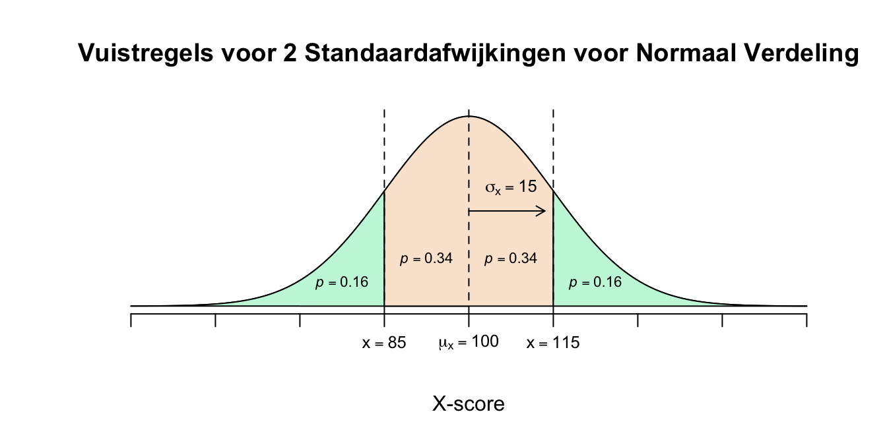
Figuur 2.3: Vuistregels voor 2 Standaardafwijkingen voor Normaal Verdeling
- Nu kunnen we het beste een ‘zes-deling’ maken en door optellen en aftrekken, vinden we de juiste oppervlakte. Het stuk vanaf het gemiddelde tot en met \(X=115\) beslaat \(34\) procent (de helft van \(68\) procent). Het stuk vanaf het gemiddelde tot en met \(X=130\) beslaat \(47.5\) procent (de helft van 95 procent). Dus als het om het gevraagde stuk gaat: \[P(115 \leq X \leq 130) = P(100 \leq X \leq 130) - P(100 \leq X \leq 115) = .475 - .34 = .135\]
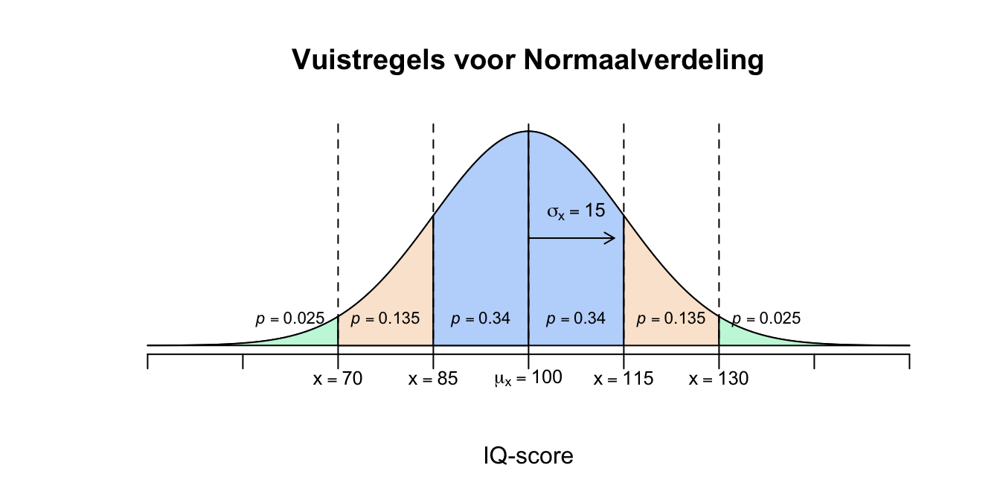
Figuur 2.4: Vuistregels voor Normaalverdeling
\(13.5\) procent van de bevolking heeft dus een IQ-score tussen de \(115\) en de \(130\).
Kijk alleen even naar de rechter helft van de verdeling, dus vanaf het gemiddelde naar rechts. In de vorige vraag hadden we de rechterhelft (\(50\) procent) in drie stukken gedeeld. Het gaat hier om het laatste stukje, het rechter staartje dus. Vanwege de twee standaardafwijking-vuistregel weten we dat het stuk van \(100\) tot en met \(130\) ongeveer \(47.5\) procent moet beslaan. We houden dus nog slechts 2.5 procent over voor het laatste rechter staartje. Hiermee weten we dus de kans dat iemand hoger scoort dan (of gelijk aan) \(X=130\). \(P(X \geq 130) = 0.025\) Om de vraag te beantwoorden hoeveel procent van de mensheid lager (of gelijk) scoort dan \(130\), moeten we dus uitvinden hoe groot de oppervlakte onder de curve is links van \(X=130\). \[P(X \leq 130) = 1 – P(X \geq 130) = 1 – .0250 = .975\] \(97.5\) procent van de bevolking scoort \(130\) of lager.
We zijn op zoek naar de slimste persoon van de 2.5 procent domste mensen. Waar in de verdeling bevinden zich de domste mensen? Die bevinden zich aan de linkerkant van de verdeling ofwel de linker staart beginnend bij \(X =\) min oneindig (de allerdomste persoon) tot en met een waarde voor \(X\) zodanig dat je \(2.5\) procent van de bevolking te pakken hebt. Op basis vuistregels kunnen we zeggen een linkerstaartje van \(2.5\) procent altijd begint bij min-oneindig en altijd eindigt op twee standaardafwijkingen links van het gemiddelde. De slimste persoon zit precies waar het staartje eindigt, dit is de hoogste waarde voor \(X\) van alle mogelijke waarden van \(X\) onder het staartje.
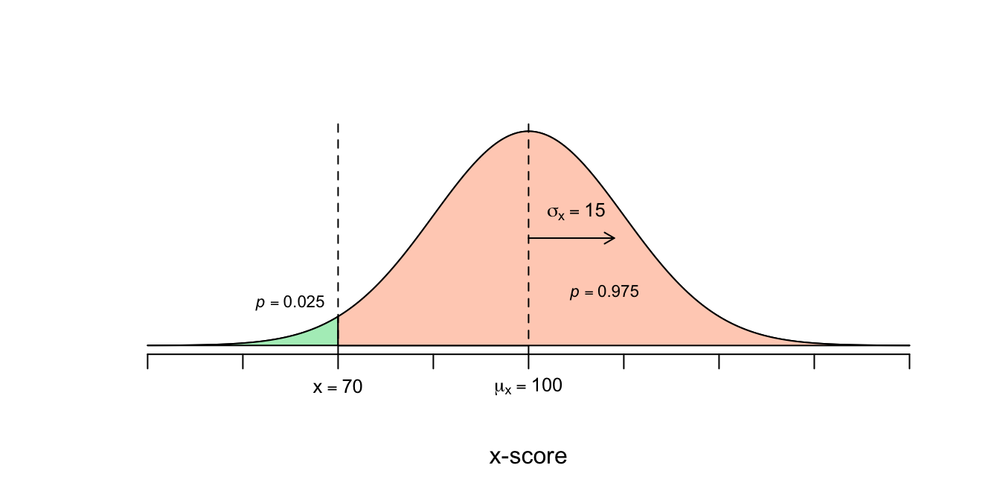
Figuur 2.5: Antwoord vraag 2.4
- We zijn op zoek naar de domste persoon van de \(0.15\) procent slimste mensen. Mijn IQ van \(130\) is helaas te laag, want dat was juist de ondergrens van de \(2.5\) procent slimste mensen (ik hoor er weer es een keer niet bij). ‘Mijn staartje’ met een oppervlakte van \(p = .025\) is dus groter of langer dan het ‘gegeven’ staartje van \(0.15\) procent (\(p = .0015\), let op het aantal decimalen!). Of anders gezegd: mijn score (\(X = 130\)) is minder ver verwijderd van het gemiddelde en is dus minder extreem dan de gevraagde score, die hoort bij de ‘gegeven’ overschrijdingskans van \(0.15\) procent. \(99.7\) procent van alle mogelijke waarnemingen valt dus tussen drie standaardafwijkingen links en drie standaardafwijkingen rechts van het gemiddelde. Je zou kunnen zeggen dat we nu met een driedeling te maken hebben met drie intervallen: \(X ≤ 55\), \(55 ≤ X ≤ 145\) en \(X ≥ 145\) qua scores en de drie bijbehorende kansen voor deze drie stukken: \(P(X \leq 55) = .0015\) \(P(55 \leq X \leq 145) = .9970\) \(P(X \geq 145) = .0015\) Dus de driedeling qua kansen: \(.0015 - .9970 - .0015\)
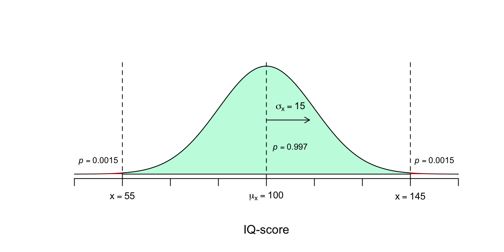
Figuur 2.6: Antwoord vraag 2.5
- Toevallig begint het staartje van \(0.15\) procent (\(p = 0.0015\)) waar wij mee te maken hebben, precies bij \(X=145\). Een IQ score van \(145\) is dus de ondergrens van het staartje die de slimste \(0.15\) procent van de bevolking representeert. \(P(X \geq x) = 0.0015\) We zijn dus opzoek naar de waarde voor de kleine \(x\) zodanig dat de stelling klopt. De kleine \(x\) moet dus \(145\) zijn want alleen dan klopt de stelling! De domste onder de 0.15 procent slimste mensen moet dus ongeveer een IQ hebben van \(145\) punten.
Opgave 3
In opgave 2 hebben we gekeken naar hoe vaak bepaalde scores binnen een verdeling voorkomen (uitgedrukt in kansen of percentages) aan de hand van de vuistregels voor standaardafwijkingen. In de deze opgave gaan we hetzelfde doen, maar dan aan de hand van \(z\)-scores en de \(z\)-tabel. We kunnen dan ook scores bekijken die niet precies \(1\), \(2\) of \(3\) standaardafwijkingen van het gemiddelde vandaan liggen (de wereld bestaat niet alleen uit mooie ronde getallen).
- We hebben de ruwe score dus omgezet (getransformeerd) naar een nieuw soort score die ons alleen nog vertelt hoeveel standaardafwijkingen de oorspronkelijke score verwijderd is van het gemiddelde. We noemen de getransformeerde score een gestandaardiseerde score of een \(Z\)-score. We zijn dus van een ruwe ‘gebeurtenis’ naar een gestandaardiseerde ‘gebeurtenis’ over gegaan. \(X_{Benjamin} = 130\), ruwe (of ongestandaardiseerde) score \(Z_{Benjamin} = 2.00\), gestandaardiseerde score (standardized score) Aan de hand van de berekende \(z\)-waarde kunnen we nu opzoeken in de \(z\)-tabel wat de kans is dat een bepaalde \(z\)-waarde een hogere – of een lagere – waarde kan aannemen dan de opgezochte waarde voor \(z\). We zijn in ons geval dus geïnteresseerd in de rechter overschrijdingskans op \(z\) is \(2.00\), omdat ik wilde weten hoeveel procent van de mensheid slimmer is dan ik, dus boven (of gelijk aan) de \(130\) scoort. De tabel geeft \(z\)-waarden (afgerond op \(2\) decimalen) en geeft de daarbij behorende, vaste linker overschrijdingskansen. Zoek de waarde \(z = 2.00\) op en kijk welke overschrijdingskans (\(p\)-waarde) de tabel daarbij geeft. Als we de kans willen weten dat iemand \(130\) of hoger scoort, wat moeten we dan nog doen met de opgezochte kans? Hieronder geef ik een voorbeeld om de linker overschrijdingskans te vinden voor \(z = 1.00\). de eerste kolom laat \(z\)-waarden zien, maar voor slechts (tot en met) het eerste decimaal. de bovenste rij laat het tweede decimaal zien (dus het derde cijfer in het getal). Bij \(z = 1.00\) zijn het eerste én tweede decimaal allebei \(0\), dus kijk je bij de rij voor \(z = 1.0\) (roze) en bij de kolom met de waarde \(0.00\) bovenaan, vervolgens kijk je waar die rij en kolom samen komen en je vindt daar de linker overschrijdingskans (\(p = 0.8413\)). Dus bijvoorbeeld bij \(z = 1.67\) hoort een \(p\)-waarde van \(.9525\).
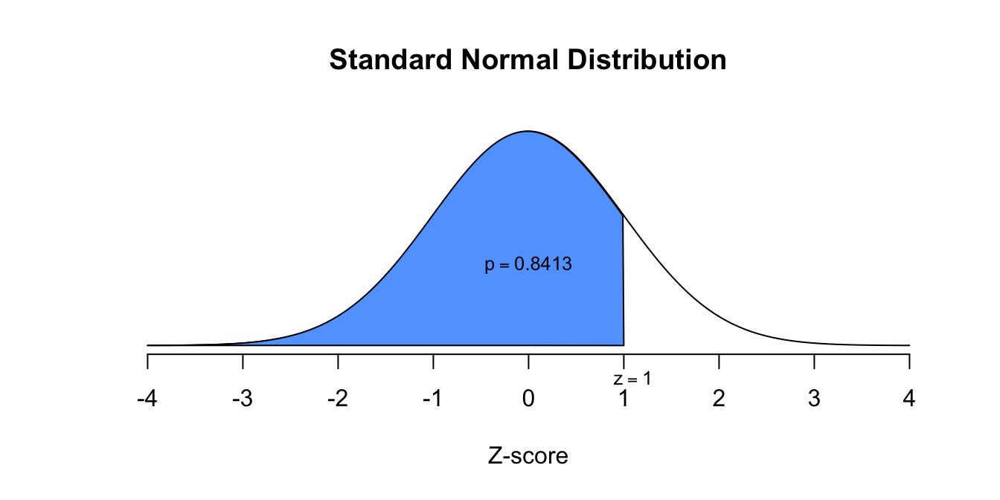
| \(Z\) | 0.00 | 0.01 | 0.02 | 0.03 | 0.04 | 0.05 | 0.06 | 0.07 | 0.08 | 0.09 |
|---|---|---|---|---|---|---|---|---|---|---|
| 0.0 | 0.5000 | 0.5040 | 0.5080 | 0.5120 | 0.5160 | 0.5199 | 0.5239 | 0.5279 | 0.5319 | 0.5359 |
| 0.1 | 0.5398 | 0.5438 | 0.5478 | 0.5517 | 0.5557 | 0.5596 | 0.5636 | 0.5675 | 0.5714 | 0.5753 |
| 0.2 | 0.5793 | 0.5832 | 0.5871 | 0.5910 | 0.5948 | 0.5987 | 0.6026 | 0.6064 | 0.6103 | 0.6141 |
| 0.3 | 0.6179 | 0.6217 | 0.6255 | 0.6293 | 0.6331 | 0.6368 | 0.6406 | 0.6443 | 0.6480 | 0.6517 |
| 0.4 | 0.6554 | 0.6591 | 0.6628 | 0.6664 | 0.6700 | 0.6736 | 0.6772 | 0.6808 | 0.6844 | 0.6879 |
| 0.5 | 0.6915 | 0.6950 | 0.6985 | 0.7019 | 0.7054 | 0.7088 | 0.7123 | 0.7157 | 0.7190 | 0.7224 |
| 0.6 | 0.7257 | 0.7291 | 0.7324 | 0.7357 | 0.7389 | 0.7422 | 0.7454 | 0.7486 | 0.7517 | 0.7549 |
| 0.7 | 0.7580 | 0.7611 | 0.7642 | 0.7673 | 0.7704 | 0.7734 | 0.7764 | 0.7794 | 0.7823 | 0.7852 |
| 0.8 | 0.7881 | 0.7910 | 0.7939 | 0.7967 | 0.7995 | 0.8023 | 0.8051 | 0.8078 | 0.8106 | 0.8133 |
| 0.9 | 0.8159 | 0.8186 | 0.8212 | 0.8238 | 0.8264 | 0.8289 | 0.8315 | 0.8340 | 0.8365 | 0.8389 |
| 1.0 | 0.8413 | 0.8438 | 0.8461 | 0.8485 | 0.8508 | 0.8531 | 0.8554 | 0.8577 | 0.8599 | 0.8621 |
| 1.1 | 0.8643 | 0.8665 | 0.8686 | 0.8708 | 0.8729 | 0.8749 | 0.8770 | 0.8790 | 0.8810 | 0.8830 |
| 1.2 | 0.8849 | 0.8869 | 0.8888 | 0.8907 | 0.8925 | 0.8944 | 0.8962 | 0.8980 | 0.8997 | 0.9015 |
| 1.3 | 0.9032 | 0.9049 | 0.9066 | 0.9082 | 0.9099 | 0.9115 | 0.9131 | 0.9147 | 0.9162 | 0.9177 |
| 1.4 | 0.9192 | 0.9207 | 0.9222 | 0.9236 | 0.9251 | 0.9265 | 0.9279 | 0.9292 | 0.9306 | 0.9319 |
| 1.5 | 0.9332 | 0.9345 | 0.9357 | 0.9370 | 0.9382 | 0.9394 | 0.9406 | 0.9418 | 0.9429 | 0.9441 |
| 1.6 | 0.9452 | 0.9463 | 0.9474 | 0.9484 | 0.9495 | 0.9505 | 0.9515 | 0.9525 | 0.9535 | 0.9545 |
| 1.7 | 0.9554 | 0.9564 | 0.9573 | 0.9582 | 0.9591 | 0.9599 | 0.9608 | 0.9616 | 0.9625 | 0.9633 |
| 1.8 | 0.9641 | 0.9649 | 0.9656 | 0.9664 | 0.9671 | 0.9678 | 0.9686 | 0.9693 | 0.9699 | 0.9706 |
| 1.9 | 0.9713 | 0.9719 | 0.9726 | 0.9732 | 0.9738 | 0.9744 | 0.9750 | 0.9756 | 0.9761 | 0.9767 |
| 2.0 | 0.9772 | 0.9778 | 0.9783 | 0.9788 | 0.9793 | 0.9798 | 0.9803 | 0.9808 | 0.9812 | 0.9817 |
| 2.1 | 0.9821 | 0.9826 | 0.9830 | 0.9834 | 0.9838 | 0.9842 | 0.9846 | 0.9850 | 0.9854 | 0.9857 |
| 2.2 | 0.9861 | 0.9864 | 0.9868 | 0.9871 | 0.9875 | 0.9878 | 0.9881 | 0.9884 | 0.9887 | 0.9890 |
| 2.3 | 0.9893 | 0.9896 | 0.9898 | 0.9901 | 0.9904 | 0.9906 | 0.9909 | 0.9911 | 0.9913 | 0.9916 |
| 2.4 | 0.9918 | 0.9920 | 0.9922 | 0.9925 | 0.9927 | 0.9929 | 0.9931 | 0.9932 | 0.9934 | 0.9936 |
| 2.5 | 0.9938 | 0.9940 | 0.9941 | 0.9943 | 0.9945 | 0.9946 | 0.9948 | 0.9949 | 0.9951 | 0.9952 |
| 2.6 | 0.9953 | 0.9955 | 0.9956 | 0.9957 | 0.9959 | 0.9960 | 0.9961 | 0.9962 | 0.9963 | 0.9964 |
| 2.7 | 0.9965 | 0.9966 | 0.9967 | 0.9968 | 0.9969 | 0.9970 | 0.9971 | 0.9972 | 0.9973 | 0.9974 |
| 2.8 | 0.9974 | 0.9975 | 0.9976 | 0.9977 | 0.9977 | 0.9978 | 0.9979 | 0.9979 | 0.9980 | 0.9981 |
| 2.9 | 0.9981 | 0.9982 | 0.9982 | 0.9983 | 0.9984 | 0.9984 | 0.9985 | 0.9985 | 0.9986 | 0.9986 |
| 3.0 | 0.9987 | 0.9987 | 0.9987 | 0.9988 | 0.9988 | 0.9989 | 0.9989 | 0.9989 | 0.9990 | 0.9990 |
2.. Als ik mijn eigen ego een beetje extra zou willen strelen, zou ik dan de z-tabel of de vuistregel beter kunnen gebruiken om de overschrijdingskans te berekenen. Met andere woorden: In hoeverre verschilt de uitkomst van 2 op basis van de z-tabel in vergelijking tot de oplossing volgens de vuistregels (opgave 3)?
Wat is de kans dat iemand een score heeft lager of gelijk aan \(X = 125\)? of ook wel: \(P(X \leq 125)\). Geef je antwoord ook in een percentage.
Hoeveel procent van de bevolking heeft een IQ hoger (of gelijk aan) \(125\)? of dus ook wel: \(P(X \geq 125)\)
Wat is de kans dat iemand een score voor \(X\) heeft lager of gelijk aan \(75\)? Of dus: \(P(X \leq 75)\)
Wat is de kans dat iemand een score heeft hoger gelijk 75?
Stel je bent heel lui (lui is goed, daar word je wiskundig van). Wat is het minimale aantal keerdat je de z-tabel zou moeten raadplegen om vraag 4 t/m 7 op te lossen?
Uitwerking 3
1.\(X_{Benjamin} = 130\) \(z_i = \frac{X_i – \mu_x}{\sigma_x}\) \(z_{Benjamin} = \frac{X_{Benjamin} – \mu_x}{\sigma_x} = \frac{130-100}{15} = (130-100)/15 = 2.00\) Berekening in woorden: eerst neem (bereken) je het ruwe verschil tussen de observatie (\(x=130\)) en het gemiddelde (\(\mu_x = 100\)) en daarna deel je het gevonden verschil door de standaardafwijking \(\sigma_x = 15\). Het antwoord geeft je dus het aantal standaardafwijkingen dat de waarneming van het gemiddelde verwijderd ligt. Gewoon een telling dus die hoort bij de vraag: Hoe vaak past de standaardafwijking tussen de observatie en het gemiddelde? Denk dus maar gewoon even dat een standaardafwijking lineaaltje is die je een aantal keer moet neerleggen vanaf het gemiddelde (midden van de normaal verdeling) om bij die speciefieke gebeurtenis (observatie of score) te komen.
- De \(z\)-tabel (zie appendix) geeft alleen linker overschrijdingskansen, dus de kans dat een gebeurtenis of score links van een bepaalde waarde valt: \[P(z \leq 2.00) = .9772\] Je kijkt dus naar de rij waar \(z=2.0\) staat (voor het eerste decimaal of eerste cijfer na de komma) en de kolom waar ‘\(0.00\)’ staat (voor het tweede decimaal achter de komma) en vervolgens kijk je waar deze rij en kolom samen komen voor de bijbehorende \(p\)-waarde (kans). Dit wil dus zeggen dat de kans \(.9772\) is dat \(z\) een waarde aanneemt kleiner gelijk \(2.00\). Deze overschrijdingskans geldt dus ook voor de ruwe waarde (\(X=130\)). Omdat de kans die ze geven eigenlijk overeen komt met de oppervlakte (area) onder de curve (kromme lijntje) links van \(z=2.00\), noemen we dit ook wel de left tail probability.
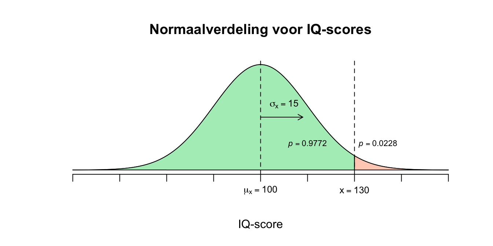
Figuur 2.7: Uitwerking opgave 2.2
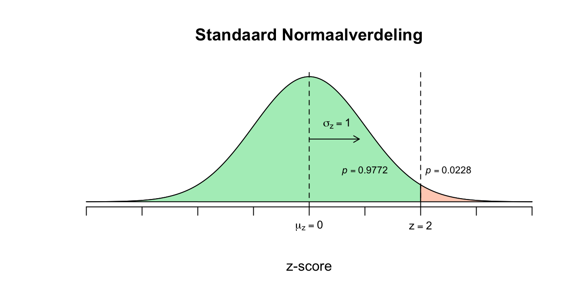
Figuur 2.8: Uitwerking opgave 2.2
- Met andere woorden: \(97.72\) procent van de bevolking is dus dommer dan ik! Maar wij wilde eigenlijk weten hoeveel procent slimmer is dan ik ofwel de kans dat iemand 130 of hoger scoort in de populatie. Wanneer je een hele verdeling in tweeën hakt (in ons geval bij \(z=2.00\) of \(X=130\)), hebben de rechter en linker staart samen altijd een oppervlakte (kans en ook wel proportie ) van \(1.00\). Nu dus nog één stapje om dat laatste op te lossen: \(P(X \geq 130) = P(z \geq 2.00) = 1 – P(z \leq 2.00) = 1 – 0.9772 = 0.0228\) Nu hebben we de oppervlakte van de rechterstaart en deze staat dus voor de kans dat \(z\) een waarde aanneemt groter gelijk \(2.00\) ofwel de right tail probability dus. Ik kan dus nu zeggen dat slechts \(2.28\) procent van de bevolking slimmer is dan ik, omdat deze overschrijdingskans dus ook op gaat voor de ruwe (ongestandaardiseerde) score \(X=130\).
Volgens de vuistregels voor standaardafwijkingen, is de rechter overschrijdingskans gelijk aan \(2.5\) procent en op basis van de standaard normaaltabel \(2.28\) procent. Mijn ego is gebaat bij zo min mogelijk mensen die slimmer zijn dan ik en dus kies ik voor de \(z\)-tabel in plaats van de vuistregels voor standaardafwijkingen omdat die overschrijdingskans net iets lager uitvalt (\(p = .0228\) is kleiner dan \(p = .025\)), waardoor ik dus een extremere waarde qua IQ lijkt te hebben.
De ruwe score (\(X=125\)) waarop de linker overschrijdingskans wordt gevraagd, moet eerst worden omgezet naar een gestandaardiseerde score, een \(z\)-score. \(X=125\) \(z = \frac{X - \mu_{x}}{\sigma_{x}} = \frac{125 - 100}{15}=(125-100)/15 = 1.67\) \(z=1.67\)
Figuur 2.9: Uitwerking 2.4

Figuur 2.10: Uitwerking 2.4
- Nu kun je de bijbehorende overschrijdingskans opzoeken in de \(z\)-tabel (officiëel heet deze de ‘standaard normaaltabel’, maar ik noem hem lekker gewoon de \(z\)-tabel). In de kolom links vind je de \(z\)-scores met het eerste decimaal (de \(6\) uit \(1.67\)), voor het tweede decimaal (de \(7\)), moet je in de bovenste rij kijken van de tabel en zoek naar de kolom waar \(0.07\) boven staat. Dan kijk je waar rij en kolom samenkomen en daar vind je de \(p\)-waarde. Vervolgens kunnen we zeggen: \(P(X \leq 125) = P(Z \leq 1.67) = .9525\) De \(z\)-tabel geeft de linker overschrijdingskans. Dus \(95.25\) procent van de bevolking scoort lager of gelijk aan \(X=125\).
De (grens-) gebeurtenis blijft hetzelfde als bij de vorige vraag (\(X=125\)), alleen moeten we nu de rechter overschrijdingskans – eigenlijk percentage – uitrekenen. We hadden de ruwe verdeling in tweeën gehakt bij \(X=125\) of in de gestandaardiseerde verdeling bij \(z=1.67\). De oppervlakte van het linkerstuk (left tail probability) hadden we al gevonden bij de vorige vraag (\(p=0.9525\)). Het rechter stuk (right tail probability) moet dus wel het resterende gedeelte zijn. In formules: \(P(X \geq 125) = 1 – P(X \leq 125) = P(Z \geq 1.67) = 1 – P(Z \leq 1.67) = 1 – 0.9525 = 0.0475\) In de vraag vroeg ik om een percentage, dus moet je ook in percentages antwoorden en niet met een kans komen aandraven. Dus maken we het nog even af: de kans van \(p=.0475\) komt overeen met een percentage van \(4.75\) procent (de kans dus vermenigvuldigen met een factor \(100\)).
In plaats van \(25\) punten rechts van het gemiddelde zitten we nu \(25\) punten links van het gemiddelde. Er wordt gevraagd naar een linker overschrijdingskans. X=75 \(X=75\) \(z = \frac{X - \mu_{x}}{\sigma_{x}} = \frac{75 - 100}{15}=(75-100)/15 = \text{-}1.67\) \(z=\text{-}1.67\) De waarde voor \(z\) is - absoluut gezien - even groot als bij de vorige vraag, alleen nu negatief! We moeten dus zoeken bij de negatieven z-waarden. Ik heb jullie maar één \(z\)-tabel gegeven, alleen voor positieve \(z\)-waarden. Er zijn heel veel soorten \(z\)-tabellen, die dus ook net weer even iets anders werken qua opzoeken. Ik ben lui en wil jullie extra laten nadenken, dus ik heb jullie maar één \(z\)-tabel gegeven, alleen eentje voor de positieve \(z\)-waarden. Lang Leve Symmetrie (twee zijdige gelijkheid)! Kijk maar even mee.
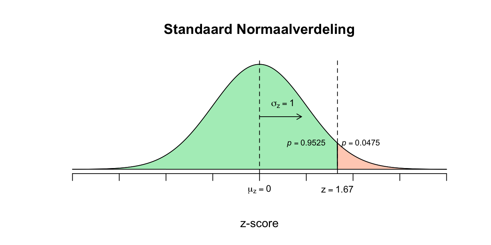
Figuur 2.11: Uitwerking 3.6
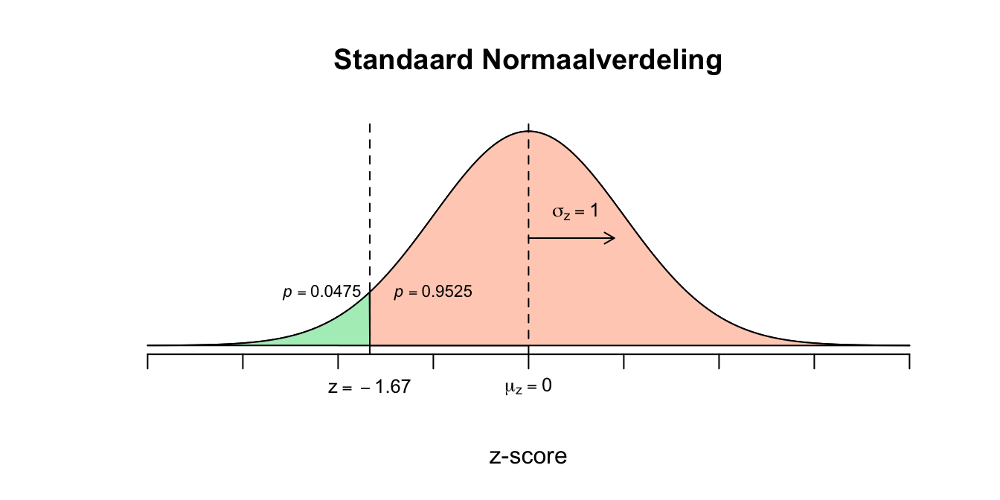
Figuur 2.12: Uitwerking 3.6
- Laten we afspreken dat bij elke \(z\)-waarde vanaf nu een tweedeling qua kansen (percentage, staarten, proporties) hoort. Je ziet dat bij \(z=1.67\) dus de tweedeling ’\(p = .9525\), voor de grote of linker staart en \(p = .0475\), voor de kleine of rechter staart. Als je met de dezelfde \(z\)-waarde te maken hebt, maar dan negatief, dus \(z=\text{-}1.67\), hebben we met dezelfde tweedeling te maken alleen wordt de linker staart nu klein en de rechter staart dus groot, de boel draait dus om!
\(P(X \leq 75) = P(z \leq \text{–}1.67) = 0.0475\) De kans is dus \(0.0475\) (weer?!) dat iemand lager of gelijk een IQ van \(75\) heeft.
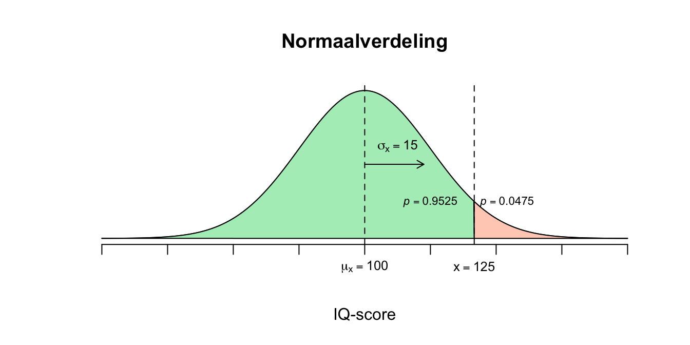
Figuur 2.13: Antwoord 3.6
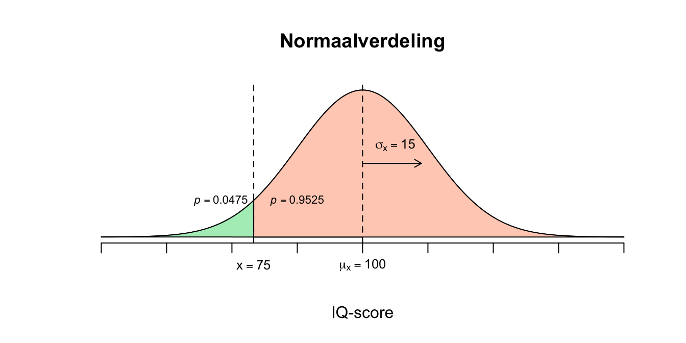
Figuur 2.14: Antwoord 3.6
\(P(X \leq 125) = 1 – P(X \leq 125) = P(z \geq \text{-}1.67) = 1 – P(z \leq \text{-}1.67) = 1 – 0.0475 = 0.9525\) De kans is dus \(.9525\) (weer?!) dat iemand hoger of gelijk aan \(X=75\).
We hadden slechts één keer de tabel te hoeven raadplegen. Elke \(z\)-waarde (in ons geval \(z= 1.67\)) heeft een linker én een rechter overschrijdingskans, de zogenaamde tweedeling. Of de \(z\)-waarde nu positief of negatief is, maakt niet uit voor die tweedeling, het enige wat verandert, is waar het grote (groter dan \(50\) procent) of het kleine (kleiner dan \(50\) procent) stuk zich bevindt, dus links of rechts van die \(z\)-waarde. Als de \(z\)-waarde negatief is, zit het kleinere deel van de tweedeling altijd links van die z-waarde en als de \(z\)-waarde positief is, zit het kleine deel juist altijd rechts van die \(z\)-waarde. Slechts één waarde voor \(z\) leidt tot een tweedeling waar de stukken precies gelijk zijn en dat is voor de waarde \(z=0\). Dit is het geval wanneer de gebeurtenis \(X\) dus nul standaardafwijkingen opzij zit van het gemiddelde ofwel dus gelijk is aan het gemiddelde.
Opgave 4
Een iPad-fabrikant vraagt zich af welk garantietermijn hij zijn klant mee moet geven. Hij onderzoekt zijn iPads en neemt aan dat de ‘levensduur’ van zijn iPads een normaalverdeling volgt met een gemiddelde van \(20000\) uur en een standaardafwijking van \(2500\) uur. Wat is de proportie (of kans) iPads die langer zal meegaan dan \(18500\) uur?
Geef de proportie iPads die langer meegaan dan \(18500\) uur, maar korter dan \(23000\) uur.
Hij wil een niet-goed-nieuwe-iPad garantie geven zodanig dat hij slechts \(1.00\) procent van zijn verkochte iPads hoeft te vervangen. Welk garantietermijn (levensduur in uren) moet hij op het etiket zetten zodanig dat hij maximaal \(1.00\) procent van de iPods hoeft te vervangen?
Uitwerking 4
- De variabele levensduur van een iPad is normaal verdeeld met een gemiddelde van \(20000\) (uur) en een standaardafwijking van \(2500\) (uur) ofwel: \[X \mathtt{\sim} N(\mu_x = 20000; \sigma_x = 2500)\] De vraag is hoe groot de proportie (gedeelte) is die de waarnemingen vanaf \(18500\) en hoger in beslag neemt ten opzichte van alle waarnemingen. Proporties en kansen zijn eigenlijk gelijk aan elkaar. We willen dus de rechter overschrijdingskans op \(X=18500\). \(X = 18500\), \(\mu_x = 20000\) en \(\sigma_x = 2500\) \(z = \frac{X - \mu_{x}}{\sigma_{x}} = \frac{18500 - 20000}{2500}=(18500-20000)/2500 = \text{-}0.60\) \(z=\text{-}0.67\)
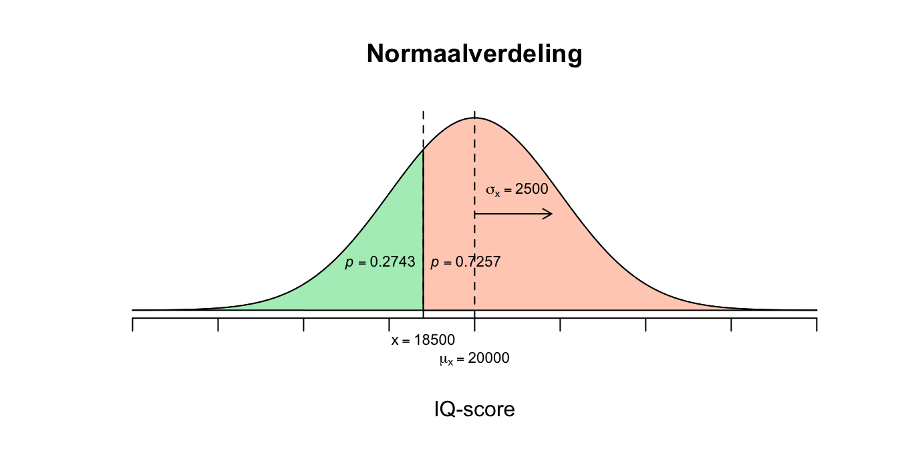
Figuur 2.15: Uitwerking 4.1
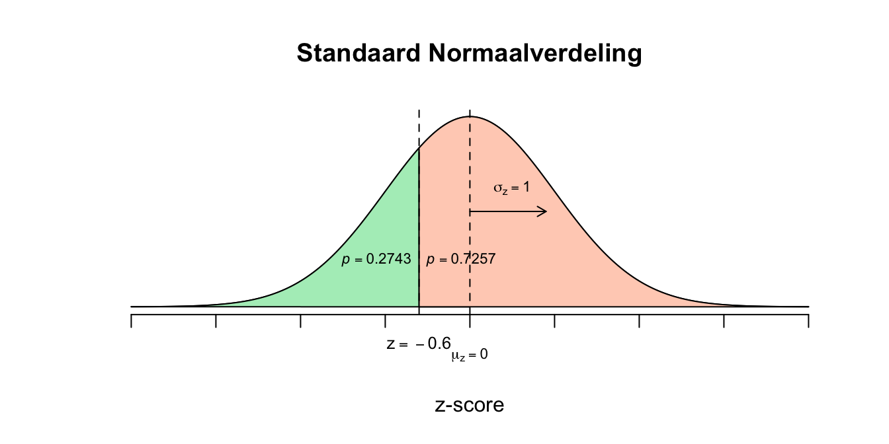
Figuur 2.16: Uitwerking 4.1
- \(P(X \geq 18500) = P(z \geq \text{-}0.60) = P(z \leq 0.60) = .7257\) Dus als je een tekening maakt, vraag je dan altijd af: Is mijn \(z\)-waarde positief of negatief? Heb ik de linker of rechter staart nodig? Heb ik dus te maken met de grote of met de kleine helft van de tweedeling. Als je tekent, zie je het ook gewoon! De proportie iPods die langer meegaat dan 18500 uur is dus \(p=.7257\) (\(72.57\) procent).
- We zijn nu geïnteresseerd in de waarden voor \(X\) tussen de \(18500\) en de \(23000\). Er zijn meerdere wegen naar Rome, zo ook hier naar het antwoord. Kijk eerst maar even naar de 3 normaalverdelingen hieronder.
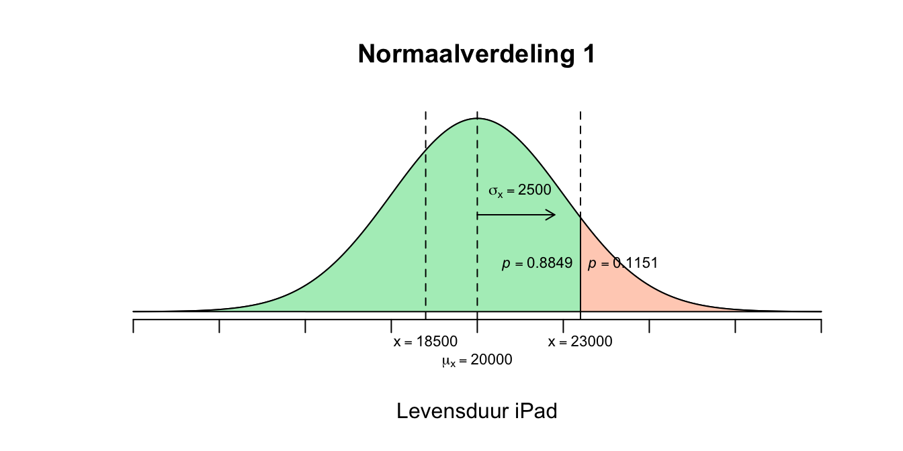
Figuur 2.17: Uitwerking 4.2
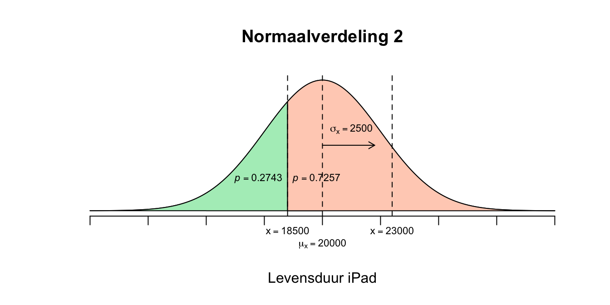
Figuur 2.18: Uitwerking 4.2
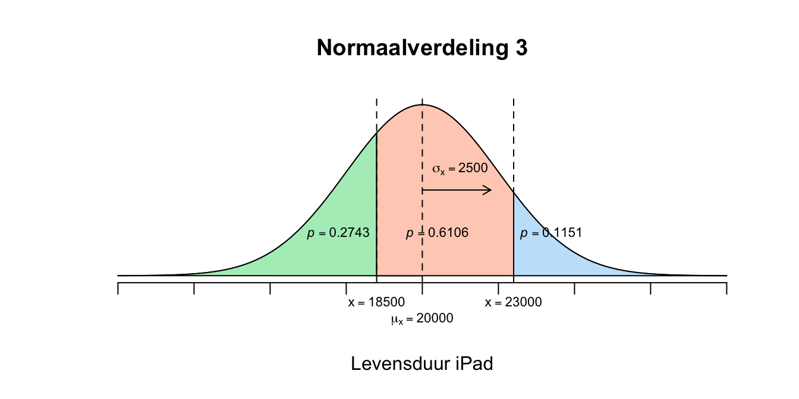
Figuur 2.19: Uitwerking 4.2
- Bijvoorbeeld als je alleen kijkt naar verdeling \(1\) en \(2\): Verdeling \(1\) laat de linker overschrijdingskans zien op \(X=23000\) met een waarde van \(p = .8849\) (de grote groene linker staart). Verdeling \(2\) laat de linker overschrijdingskans zien op \(X=18500\) met een waarde van \(p = .2743\) (de kleine groene linker staart). We willen de oppervlakte weten boven het interval dat loopt van \(X=18500\) tot en met \(X=23000\). Je haalt dus de kleine staart van de grote staart af, wat hou je dan over? \(P(18500 \leq X \leq 23000) = P( X \leq 23000) - P(X \leq 18500) = .8849 - .2743 = .6106\) \(P(18500 \leq X \leq 23000) = .6106\) Maar dit is ruw, dus: \(P(\text{–}0.60 \leq z \leq 1.20) = P(z \leq 1.20) – P(z \leq \text{–}0.60) = .8849 – .2743 = .6106\) \(P(–0.60 \leq z \leq 1.20) = 0.6106\) Als \(88.49\) procent van de iPads korter meegaat dan \(23000\) uur en \(27.43\) procent korter dan \(18500\) uur, dan moet het wel zijn dat \(88.49 - 27.43 = 61.06\) procent van de iPads tussen de \(18500\) uur en \(23000\) uur meegaat. Vergelijk deze redenering met het volgende: Als \(80\) procent van een groep kinderen jonger is dan \(9\) jaar en \(20\) procent van die groep jonger dan \(5\) jaar dan moet dus \(80 - 20 = 60\) procent van alle kinderen in die groep tussen de \(5\) en de \(9\) jaar zijn.
- De levensduur varieert, sommige iPads gaan korter mee dan andere. Sommige zelfs zo kort dat de klant dus een nieuwe zou willen hebben (niet-goed-nieuwe-iPod garantie). De fabrikant wil hooguit \(1\) procent van zijn iPads vervangen omdat ze ‘te slecht’ waren. Als hij dus weet wat de iPad is qua hoogste levensduur van zijn \(1.00\) procent slechtste iPads, kan hij dat als garantie termijn meegeven. Hij zal dan hooguit \(1\) procent van zijn verkochte iPads terug krijgen en moeten vervangen. Hier is weer sprake van zo’n omgedraaide vraag zoals bij vraag 2.2d en e. Bij de gewone ‘berekeningen’ zetten we een ruwe score om naar een z-waarde om vervolgens de overschrijdingskans op te zoeken of even schematisch: \(X \rightarrow Z \rightarrow P\) Dus met een gegeven \(X\) uit de vraag kun je via de berekende \(z\)-waarde, een \(p\)-waarde opzoeken aan de hand van de \(z\)-tabel. Bij deze vraag beginnen we met de overschrijdingskans (die is gegeven in de opgave) om die vervolgens weer terug te transformeren - omzetten - naar een ruwe score ofwel: $P Z X $ Dus met een gegeven \(p\)-waarde uit de vraag, kun je via de opgezochte \(z\)-waarde (aan de hand van de \(z\)-tabel), een \(X\)-waarde uitrekenen. De slechtste \(1\) procent van de iPads bevinden zich onder de linkerstaart met een oppervlakte van \(p=.01\). Dus we zijn op zoek naar de \(X\)-waarde die bij een linker staart van \(p = .01\) hoort. Omdat dit staartje links zit én kleiner is dan \(50\) procent, moet de bijbehorende \(z\)-waarde dus negatief zijn. Ik heb jullie alleen een \(z\)-tabel gegeven met positieve waarden, dus wij moeten eerst nog de vertaling maken:
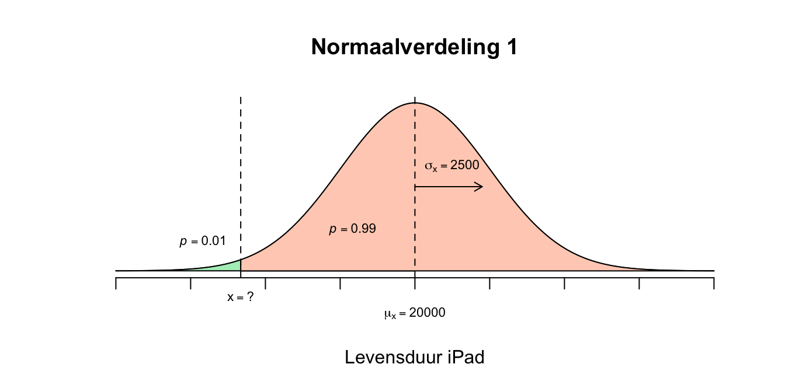
Figuur 2.20: Uitwerking 4.3
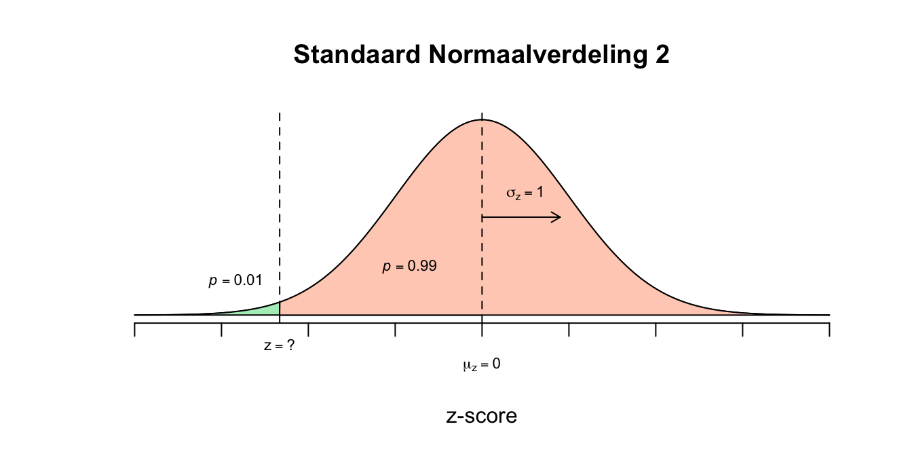
Figuur 2.21: Uitwerking 4.3
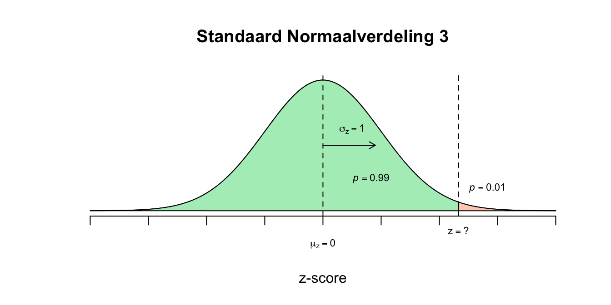
Figuur 2.22: Uitwerking 4.3
- Dus de \(z\)-waarde die wij zoeken hoort bij de tweedeling ‘\(.01\) tegen \(.99\)’ en is dus dezelfde \(z\)-waarde die hoort bij de tweedeling ‘\(.99\) tegen \(.01\)’ het enige verschil is dus het minnetje! Omdat onze \(z\)-tabel alleen maar linker staarten geeft die groter dan \(50\) procent zijn, zoeken we dus op een linker staart met \(p =.99\) Zoek dus in de \(z\)-tabel naar \(p = 0.99\) en kijk welke waarde voor \(z\) daarbij hoort. Omdat de waarde \(0.99\) er net niet precies in staat, is het het handigst om te kijken welk getalletje (\(p\)-waarde) er het dichtstbij in de buurt komt. Twee getalletjes komen in aanmerking. De linker overschrijdingskans van \(0.9901\) ligt net iets boven en \(0.9898\) ligt net iets onder de \(0.99\) (denk voor het kijk-gemak dat onze staartje een oppervakte heeft van \(0.9900\), hetzelfde dus als \(0.99\), maar dan in vier decimalen zoals de tabel ook geeft). De fabrikant wilde maximaal \(1.00\) procent vervangen dus laten we vooral niet het grotere voor meer dan \(1.00\) procent gaan, maar voor de tweedeling \(p = 0.9901\) tegen \(p = 0.0099\)! Lees nu af welke \(z\)-waarde bij de linker overschrijdingskans van \(0.9901\) en als het goed is vind je dan \(z=2.33\) want: \(P(z \leq 2.33) = 0.9901\) en hier volgt dus \(P(z \leq \text{-}2.33) = 0.0099\) Bij een linker staartje met oppervlakte van \(p=0.0099\) hoort dus een \(z\)-waarde van \(\text{-}2.33\).
Figuur 2.23: Uitwerking 4.3 vervolg
Figuur 2.24: Uitwerking 4.3 vervolg
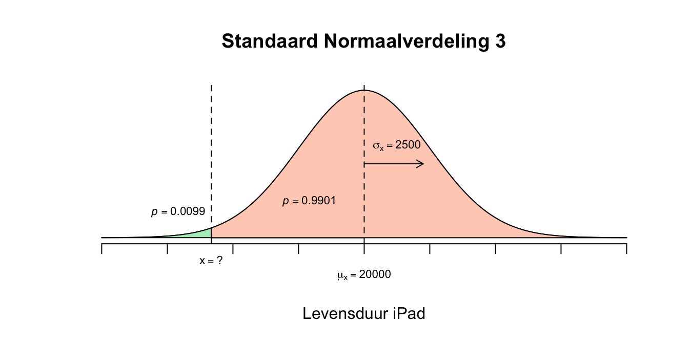
Figuur 2.25: Uitwerking 4.3 vervolg
- Dit betekent dus dat de ruwe score \(X\) dus \(2.33\) standaardafwijking links van het gemiddelde zit in de ruwe verdeling. Ik geef jullie twee manieren op de juiste waarde van \(X\) te vinden (berekenen). Voor de eerste - en meest simpele - manier, gaan we een stukje wandelen vanuit het gemiddelde (\(\mu_x = 20000\)). Niet \(1\), niet \(2\), maar \(2.33\) standaardafwijkingen (denk lineaaltjes) naar links dus: \(X_{garantie} = 20000 – 2.33 \cdot 2500 = 14175\) Dus het minnetje omdat we naar links wandelen vanuit het gemiddelde. Als we naar rechts moeten wandelen, doen we dus plus! Deze berekening kun je dus beredeneren, zie de standaardafwijking weer als een liniaaltje: je start vanuit het middelpunt van de verdeling (\(\mu_x = 20000\)) en omdat je in dit geval naar links moet, doe je ‘min’ het aantal standaardafwijkingen (\(2.33\)) keer de lengte van ons liniaaltje (\(\sigma_x = 2500\)). Je legt het liniaaltje dus \(2.33\) keer naar links vanuit het gemiddelde. Anyway, de conclusie is dus dat ongeveer \(1\) procent van de iPads dus een levensduur heeft van \(14175\) uur of korter. En als die dus deze waarde als garantie termijn stelt, zal de fabrikant dus maar \(1\) procent van de verkochte iPads te vervangen. Het kan ook moeilijker. Dus nu tweede manier. Zodra je \(de\) z-waarde weet, vul je die in in de \(z\)-formule. Je vult ook de andere waarden in die je al weet en je houdt \(1\) onbekende over, de waarde die we willen weten, namelijk \(X\): \(z = \frac{X - \mu_x}{\sigma_x}\) De \(z\)-formule, nu nog invullen, onze \(z\)-waarde is negatief dus vergeet nu niet het minteken. \(\text{-}2.33 = \frac{X - 20000}{2500}\) Ik pak hier even een uitgebreidere uitwerking (old school, de balans-methode om een vergelijking op te lossen), snellere manieren zijn ook mogelijk uiteraard, maar op deze manier komen we wat basis rekenregels tegen. Ik draai dus eerst de boel even om omdat ik de onbekende (\(X\)) graag aan de linker kant van de vergelijking wil. Ik gebruik hier dus de regel (eigenschap): als ‘\(a=b\)’ dan ook ‘\(b=a\)’. \(\frac{X - 20000}{2500} = \text{-}2.33\) Nu beide kanten vermenigvuldigen met \(2500\), zodat we de boel in ‘balance’ houden, wel zo eerlijk om met beide zijdes van de vergelijking hetzelfde te doen: \(\frac{X - 20000}{2500} \cdot 2500 = \text{-}2.33 \cdot 2500\) Dit is te schrijven als: \(\frac{(X - 20000) \cdot 2500}{2500} = \text{-}2.33 \cdot 2500\) Aan de linkerkant vallen de twee ‘2500’-tjes tegen elkaar weg (\(\frac{2500}{2500}=1\)): \((X - 20000) \cdot \frac{2500}{2500} = \text{-}2.33 \cdot 2500\) \((X - 20000) \cdot 1 = \text{-}2.33 \cdot 2500\) \((X - 20000) = \text{-}2.33 \cdot 2500\) \(X - 20000 = \text{-}2.33 \cdot 2500\) Nu aan beide zijden er \(20000\) bij optellen: \(X – 20000 + 20000 = \text{–}2.33 \cdot 2500 + 20000\) wordt: \(X = \text{–}2.33 \cdot 2500 + 20000\) of: \(X = 20000 + \text{-}2.33 \cdot 2500\) of korter: \(X = 20000 - 2.33 \cdot 2500\) Nu hebben we wat we bij de eerste manier zelf al hadden bedacht! dus: \(X_{garantie} = 20000 - 2.33 \cdot 2500 = 14175\) De fabrikant moet zijn klant dus vertellen dat als zijn iPad sneller kapot gaat dan \(14175\) uur, dat de klant dan een nieuwe kan komen halen.
Opgave 5
We gaan terug naar IQ-scores. We nemen weer even aan dat deze scores normaal verdeeld zijn met een gemiddelde van \(100\) en een standaardafwijking van \(15\). Eigenlijk wil ik straks weten wat de kans is op een IQ-score van precies \(110\). Bij een dobbelsteen kunnen we kansen uitrekenen op enkele gebeurtenissen. Bijvoorbeeld: Wat is de kans dat je precies drie ogen gooit bij één worp? Bijna iedereen die vaker dan eens gedobbeld heeft, weet dat het juiste antwoord \(1/6\) is. Tot nu toe hadden we het bij IQ telkens over de kans op een aantal (of interval van bepaalde) scores. De kans op een score hoger of gelijk \(X=130\) bijvoorbeeld, behelst eigenlijk oneindig veel opties, want alle scores op het interval vanaf \(130\) en groter, tellen mee! Dus ook een score met heel veel cijfers achter de komma zoals zoals de score \(131.300234\). We beginnen even met een klein interval voor IQ scores nog niet 1 enkele score. Wat is de kans dat iemand tussen de 109 en de 111 scoort, dus \(P(109 \leq X \leq 111)\)?
Een dobbelsteen heeft \(6\) mogelijke gebeurtenissen en de kans op precies drie ogen bij één worp is \(1/6\). Om deze waarde te berekenen kijk je dus welk deel de gewenste gebeurtenis(sen) inneemt van het aantal voor alle mogelijke gebeurtenissen en je deelt dus het aantal gewenste of toegestane uitkomsten (hier slecht \(1\), namelijk de uitkomst drie ogen) door het totale aantal uitkomsten (hier dus \(6\)).Hoeveel mogelijke waarden zijn er bij de variabele IQ en wat is dus kans op precies \(X = 110\)?
Grade Point Average (GPA) zijn scores die zeggen wat het gemiddelde resultaat van een student is, de scores lopen van \(0\) tot en met \(4\). Voor het gemak en onze berekeneningen nemen we aan dat GPA-scores in de populatie een normaalverdeling volgt met een gemiddelde \(\mu{GPA} = 2.75\) en \(\sigma{GPA} = 0.500\). Wat is de kans (dus niet percentage) dat een willekeurige student een score tussen de \(2.60\) en de \(2.70\)? Of ook wel: \(p(2.6 \leq GPA \leq 2.7)\)
Uitwerking 5
- Zie de volgende drie plaatjes.


\[P(109 \leq X \leq 111) = P(X \leq 111) – P(X \leq 109)\]
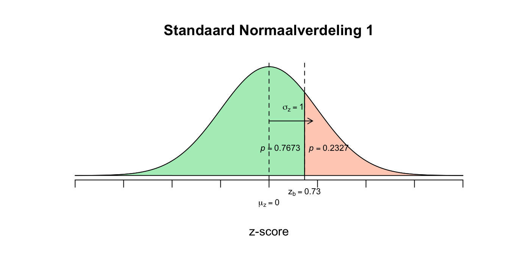
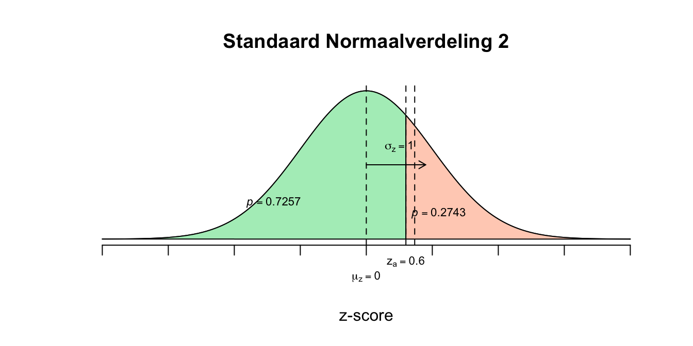
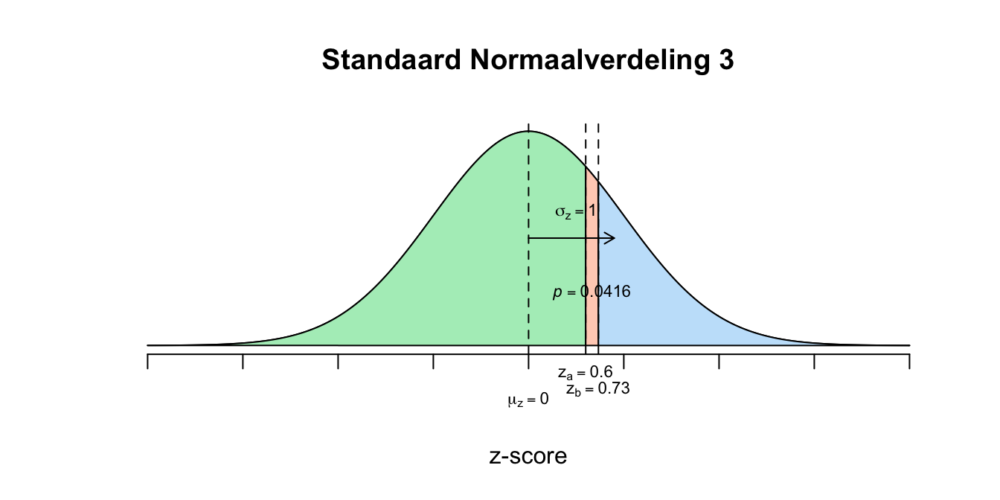
\(P(0.60 \leq z \leq 0.73) = P(z \leq 0.73) − P(z \leq 0.60) = 0.7673 − 0.7257 = 0.0416\) De kans is dus \(.0416\) dat iemand \(109\) of hoger maar lager gelijk \(111\) scoort.
- Tot nu toe hebben we telkens de kans op een verzameling scores tussen twee waarden bekeken dus de de kans op scores behorend bij een bepaald interval. Als we de rechter overschrijdingskans op een score van bijvoorbeeld \(120\) bekijken, heeft die ook een tweede waarde of grens, namelijk plus-oneindig. Het interval met de scores waarop we een kans willen berekenen, loopt dan dus van \(X=120\) tot en met plus oneindig. Eigenlijk is het interval dus oneindig lang aan de rechter kant (ik geloof dat we dit ook wel een open interval noemen). We zullen nu de kans op één enkele waarde bekijken. Ik bekijk het op twee verschillende manieren. Bij een dobbelsteen zou je kunnen zeggen dat er in totaal zes verschillende scores mogelijk zijn. De kans op bijvoorbeeld precies ‘3 ogen’ bij één worp, bereken je door het aantal juiste mogelijkheden (in dit geval dus maar \(1\)) door het totale aantal mogelijkheden (\(6\), want zes zijdes) te delen: \(P(\text{precies 3 gooien}) =\frac{\text{aantal juiste gebeurtenissen}}{\text{totaal aantal gebeurtenissen}} = \frac{1}{6} = .167\) Wij zijn op zoek naar de kans dat \(X\) precies \(110\) is (dat iemand dus een IQ heeft van precies \(110\) punten). Er is dus maar een ‘juiste’ gebeurtenis die bevredigt (voldoet aan onze eis), maar hoeveel gebeurtenissen zijn er in totaal? Oneindig! We krijgen dus: \(P(X = 110) =\frac{\text{aantal juiste gebeurtenissen}}{\text{totaal aantal gebeurtenissen}} = \frac{1}{\text{oneindig groot getal}} = \frac{1}{\infty} = 0\) Omdat er eigenlijk oneindig veel mogelijkheden zijn, moeten we dus delen door een oneindig groot getal (\(\infty\)) en als je \(1\) deelt door oneindig krijg je (afgerond) \(0\). Anders gezegd is de kans dus gelijk aan \(0\) dat iemand precies een score van \(110\) heeft. Best vreemd toch?? Er zijn toch genoeg mensen met een IQ van \(110\)? We kunnen het ook aan de hand van een normaalverdeling bekijken. Je zou kunnen zeggen dat het interval begint op \(X=110\) én eindigt op \(X=110\) ofwel een lengte van \(0\) heeft. We zijn op zoek naar de oppervlakte boven het interval (dus de \(p\)-waarde) en als je in het plaatje hieronder kijkt, zie je dat die oppervlakte eigenlijk alleen uit het verticale lijntje boven \(X=110\) bestaat. En een lijntje is in de wiskunde oneindig dun en heeft dus ook een oppervlakte van 0! Bij een dobbelsteen (een discrete variabele) kun je dus wel een kans berekenen maar bij scores die normaal verdeeld zijn dus niet. Of beter gezegd: Het aantal ogen bij het gooien met een dobbelsteen gedraagt zich als een discrete variabele wat wil zeggen dat er slechts een beperkt aantal mogelijke waarde zijn en als je van één waarde naar de dichtstbij zijnde mogelijke waarde wil wandelen, moet je springen! Met een dobbelsteen kun je geen \(2.5\) gooien! Maar als we berekeningen los laten op een variabele als IQ, behandelen we IQ alsof het een continue variabele is. Een continue variabele loopt door, elke waarde (op een interval) is mogelijk, ook een getal met \(20\) cijfers achter de komma. Toch is het vreemd, want dit alles suggereert dat er niemand zou kunnen zijn die precies een score van \(110.000000...\) heeft. In de praktijk is dit natuurlijk wel het geval. Eigenlijk zijn hier twee punten die ik wil maken. Als eerste dat de kans op één specifieke waarde voor een continue variabele, wiskundig gezien, altijd gelijk aan nul! \(P(X=110)=0\) Als tweede, of eigenlijk leidt het eerste punt tot het volgende: Omdat deze kans precies nul is, maakt het bij overschrijdingskansen (\(p\)-waarden) niet uit of de vraag gaat over ‘kleiner dan (\(<\))’ of ‘kleiner gelijk aan (\(\leq\))’, dit geldt ook voor de vergrotende trap: \(P(X \leq 110) = P(z \leq 0.67) = .7486\) is hetzelfde als: \(P(X < 110) = P(z < 0.67) = .7486\) en \(P(X \geq 110) = P(z \geq 0.67) = .2514\) is hetzelfde als: \(P(X > 110) = P(z > 0.67) = .2514\) Bij berekeningen met de normaal verdeling maakt het dus niet uit of we een ‘kleiner dan’- of een ‘kleiner gelijk’ teken gebruiken. Dit geld ook voor de vraagstelling. ‘Wat is de kans dat iemand lager dan 110 scoort?’ heeft hetzelfde antwoord (\(p=0.7486\)) als de vraag: ‘Wat is de kans dat iemand lager of gelijk aan \(110\) scoort?’. Dit gaat dus niet op voor discrete scores (dobbelsteen), maar alleen voor variabelen waarvan we aannemen dat ze zich normaal (en dus ook continue) gedragen.
Opgave 6
Grade Point Average (GPA) zin scores die zeggen wat het gemiddelde resultaat van een tudent is. de scores lopen van 0 tot en met 4. GPA volgt ind e populatie eenn ormaalverdeling met een gemiddelde van mu_GPA = 2.75 en een sigma_GPA=0.500. Wat is de kans (dus niet percentage) dat een willekeurige student een score tussen de 2.60 en de 2.70 of ook wel: \[P(2.6 \leq GPA \leq 2.7 \]
Stel dat er op een onderwijsinstelling \(4500\) leerlingen zitten, hoeveel van deze leerlingen hebben naar verwachting een GPA-score tussen de \(2\) en \(3\)?
Geef de GPA score van de domste leerling van de \(10\) procent slimste leerlingen op deze onderwijsinstelling.
Uitwerking 2.6
- Gegeven: \[\text{GPA} \; \mathtt{\sim} \; N(\mu_{gpa} = 2.75 ; \sigma_{gpa} = 0.50)\] \[P(2.6 \leq GPA \leq 2.7) = P(GPA \leq 2.7) − P(GPA \leq 2.6)\]
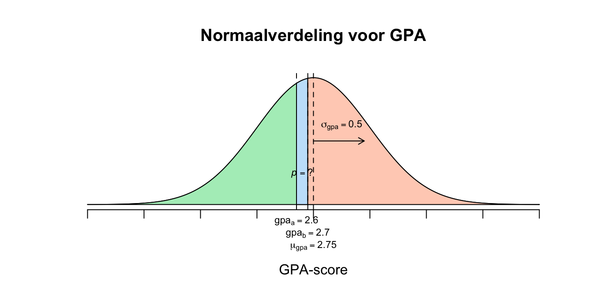
Figuur 2.26: Uitwerking 6.1
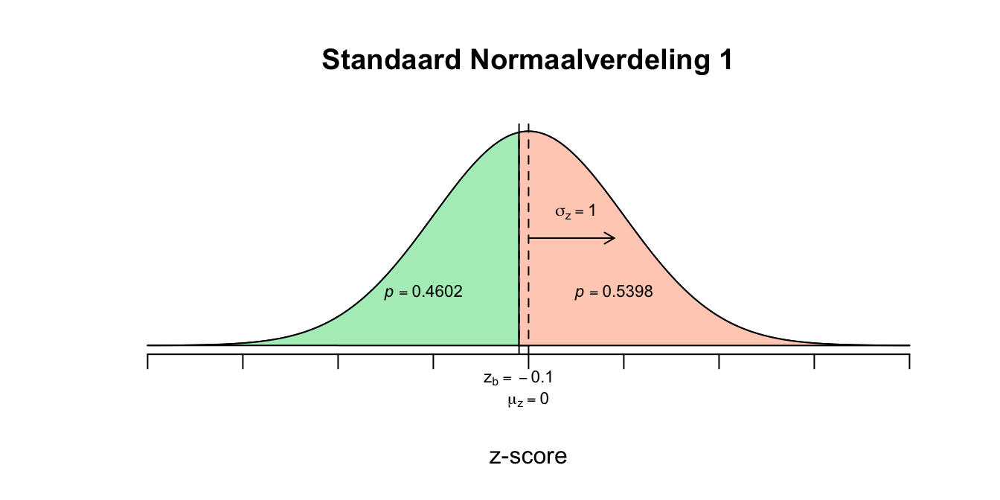
Figuur 2.27: Uitwerking 6.1
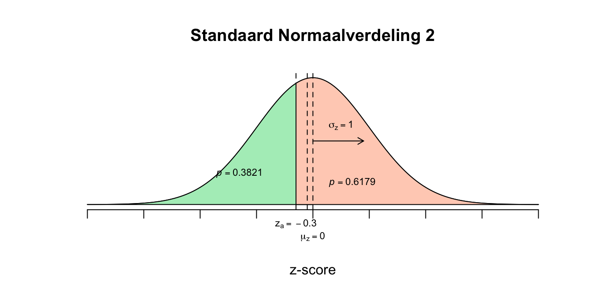
Figuur 2.28: Uitwerking 6.1
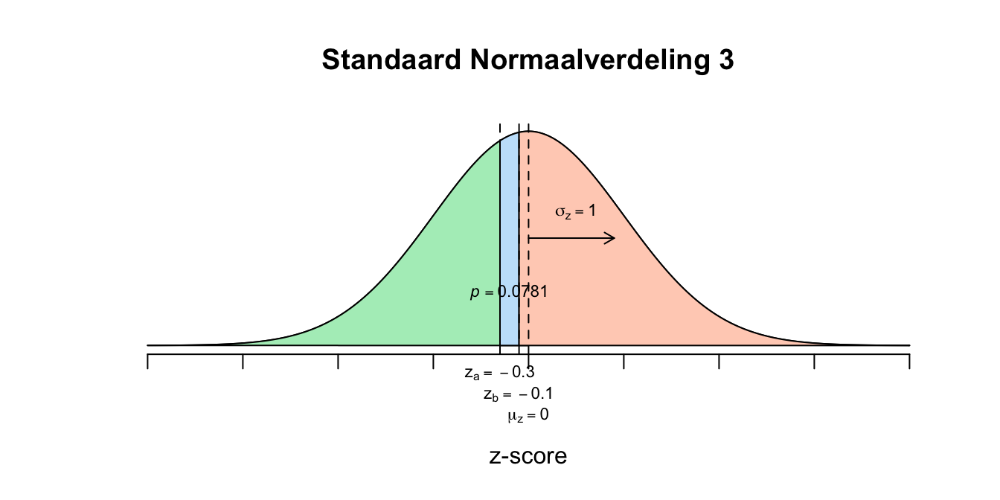
Figuur 2.29: Uitwerking 6.1
\[P(\text{-}0.30 \leq z \leq \text{-}0.10) = P(z \leq \text{-}0.10) − P(z \leq \text{-}0.30) = 0.4602 − 0.3821 = 0.0781\] 2. \[P(2 \leq GPA \leq 3) = P(GPA \leq 3) − P(GPA \leq 2) = .6915 - .0668 = 0.6247\]
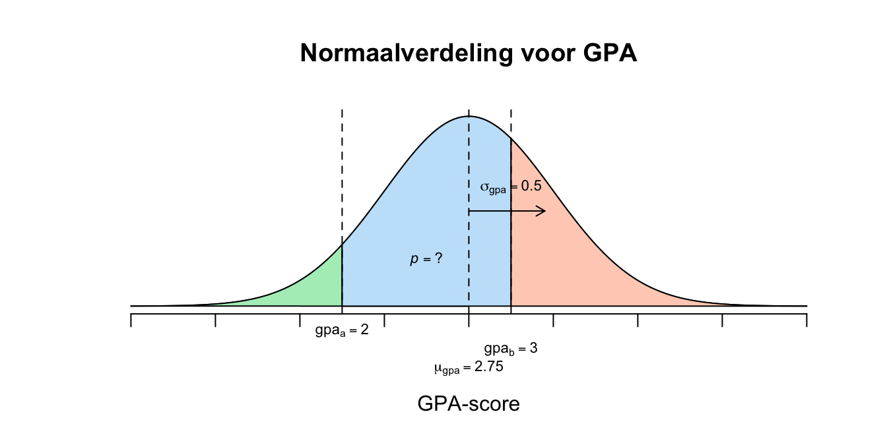
Figuur 2.30: Antwoord 6.2
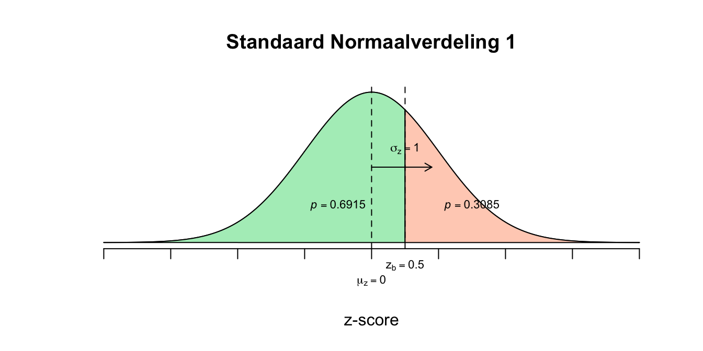
Figuur 2.31: Antwoord 6.2
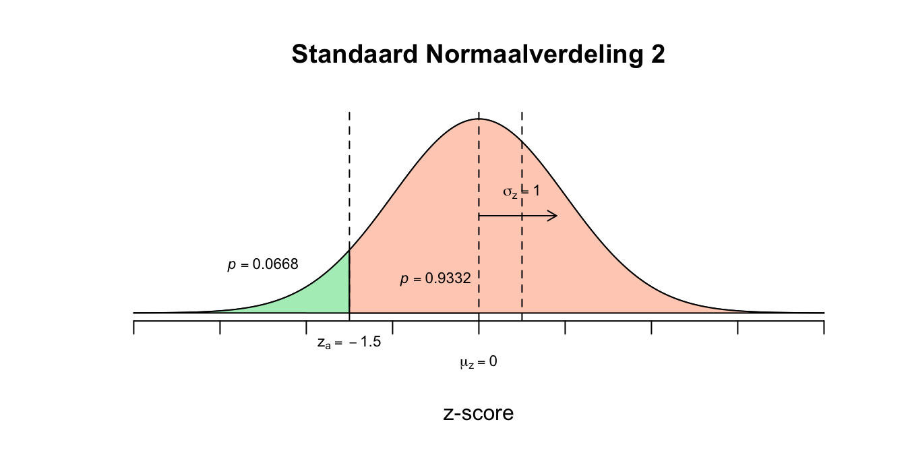
Figuur 2.32: Antwoord 6.2
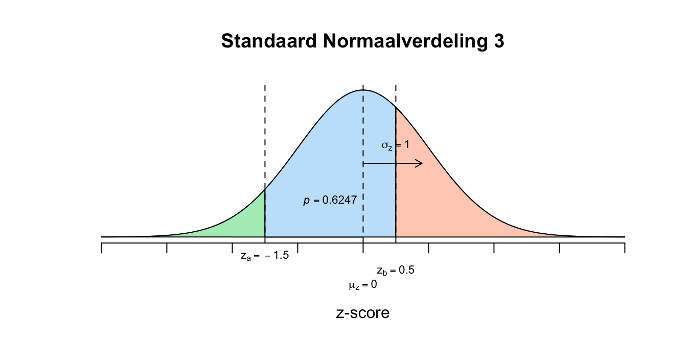
Figuur 2.33: Antwoord 6.2
- \[P(2 \leq GPA \leq 3) = P(GPA \leq 3) − P(GPA \leq 2) = .6915 - .0668 = 0.6247\] \[P(\text{-}1.50 \leq z \leq 0.50) = P(z \leq 0.50) − P(z \leq \text{-}1.50) = .6915 - .0668 = 0.6247\] Verwachte aantal leerlingen: \(0.6247 \cdot 4500 \approx 2811\)
t-tabel
Voordat we verder gaan met opgaven, geef ik jullie nog een tabel, ook wel de ‘\(t\)-tabel’, zoals we nu met \(z\)-waarden te maken hebben, hebben we later vanaf hoofdstuk 4, ook \(t\)-waarden nodig. Het handige van deze tabel is dat er ook een paar heel precieze \(z\)-waarden in staan (onderaan), die precies horen bij veel gebruikte \(p\)-waarden zoals \(p = .10\), \(p = .05\), \(p = .025\), \(p = .01\) en \(p = .001\). Later vertel ik meer over deze tabel (zie ook de appendix voor alle kanstabellen). Als je wilt weten met welke \(z\)-waarde (ook wel de kritieke \(z\)-waarde genoemd of kortweg \(z^{*}\)) je te maken hebt bij een tweedeling \(p=.90\) tegen \(p = .10\) (of een symmetrische driedeling met een middenstuk van \(p = .80\) en twee staarten van \(p = .10\)), kijk je bij de kolom waar een upper tail van \(p = .10\) bij hoort. Vervolgens kijk je helemaal in de onderste rij voor de bijbehorende \(z\)-waarde. Als het goed is, vind je dan \(z^{*} = 1.282\). Onthoud ook maar vast de heilige \(z\)-waarde die hoort bij een rechter staart van \(p = .025\), namelijk: \(Z_{heilig} = 1.960\). Nogmaals, ik kom later terug op deze tabel wanneer we hem voor \(t\)-waarden nodig hebben, the real thing!

| df | .25 | .20 | .15 | .10 | .05 | .025 | .02 | .01 | 0.005 | .0025 | .001 | .0005 |
|---|---|---|---|---|---|---|---|---|---|---|---|---|
| 1 | 1.000 | 1.376 | 1.963 | 3.078 | 6.314 | 12.706 | 15.895 | 31.821 | 63.657 | 127.321 | 318.309 | 318.309 |
| 2 | 0.816 | 1.061 | 1.386 | 1.886 | 2.920 | 4.303 | 4.849 | 6.965 | 9.925 | 14.089 | 22.327 | 22.327 |
| 3 | 0.765 | 0.978 | 1.250 | 1.638 | 2.353 | 3.182 | 3.482 | 4.541 | 5.841 | 7.453 | 10.215 | 10.215 |
| 4 | 0.741 | 0.941 | 1.190 | 1.533 | 2.132 | 2.776 | 2.999 | 3.747 | 4.604 | 5.598 | 7.173 | 7.173 |
| 5 | 0.727 | 0.920 | 1.156 | 1.476 | 2.015 | 2.571 | 2.757 | 3.365 | 4.032 | 4.773 | 5.893 | 5.893 |
| 6 | 0.718 | 0.906 | 1.134 | 1.440 | 1.943 | 2.447 | 2.612 | 3.143 | 3.707 | 4.317 | 5.208 | 5.208 |
| 7 | 0.711 | 0.896 | 1.119 | 1.415 | 1.895 | 2.365 | 2.517 | 2.998 | 3.499 | 4.029 | 4.785 | 4.785 |
| 8 | 0.706 | 0.889 | 1.108 | 1.397 | 1.860 | 2.306 | 2.449 | 2.896 | 3.355 | 3.833 | 4.501 | 4.501 |
| 9 | 0.703 | 0.883 | 1.100 | 1.383 | 1.833 | 2.262 | 2.398 | 2.821 | 3.250 | 3.690 | 4.297 | 4.297 |
| 10 | 0.700 | 0.879 | 1.093 | 1.372 | 1.812 | 2.228 | 2.359 | 2.764 | 3.169 | 3.581 | 4.144 | 4.144 |
| 11 | 0.697 | 0.876 | 1.088 | 1.363 | 1.796 | 2.201 | 2.328 | 2.718 | 3.106 | 3.497 | 4.025 | 4.025 |
| 12 | 0.695 | 0.873 | 1.083 | 1.356 | 1.782 | 2.179 | 2.303 | 2.681 | 3.055 | 3.428 | 3.930 | 3.930 |
| 13 | 0.694 | 0.870 | 1.079 | 1.350 | 1.771 | 2.160 | 2.282 | 2.650 | 3.012 | 3.372 | 3.852 | 3.852 |
| 14 | 0.692 | 0.868 | 1.076 | 1.345 | 1.761 | 2.145 | 2.264 | 2.624 | 2.977 | 3.326 | 3.787 | 3.787 |
| 15 | 0.691 | 0.866 | 1.074 | 1.341 | 1.753 | 2.131 | 2.249 | 2.602 | 2.947 | 3.286 | 3.733 | 3.733 |
| 16 | 0.690 | 0.865 | 1.071 | 1.337 | 1.746 | 2.120 | 2.235 | 2.583 | 2.921 | 3.252 | 3.686 | 3.686 |
| 17 | 0.689 | 0.863 | 1.069 | 1.333 | 1.740 | 2.110 | 2.224 | 2.567 | 2.898 | 3.222 | 3.646 | 3.646 |
| 18 | 0.688 | 0.862 | 1.067 | 1.330 | 1.734 | 2.101 | 2.214 | 2.552 | 2.878 | 3.197 | 3.610 | 3.610 |
| 19 | 0.688 | 0.861 | 1.066 | 1.328 | 1.729 | 2.093 | 2.205 | 2.539 | 2.861 | 3.174 | 3.579 | 3.579 |
| 20 | 0.687 | 0.860 | 1.064 | 1.325 | 1.725 | 2.086 | 2.197 | 2.528 | 2.845 | 3.153 | 3.552 | 3.552 |
| 21 | 0.686 | 0.859 | 1.063 | 1.323 | 1.721 | 2.080 | 2.189 | 2.518 | 2.831 | 3.135 | 3.527 | 3.527 |
| 22 | 0.686 | 0.858 | 1.061 | 1.321 | 1.717 | 2.074 | 2.183 | 2.508 | 2.819 | 3.119 | 3.505 | 3.505 |
| 23 | 0.685 | 0.858 | 1.060 | 1.319 | 1.714 | 2.069 | 2.177 | 2.500 | 2.807 | 3.104 | 3.485 | 3.485 |
| 24 | 0.685 | 0.857 | 1.059 | 1.318 | 1.711 | 2.064 | 2.172 | 2.492 | 2.797 | 3.091 | 3.467 | 3.467 |
| 25 | 0.684 | 0.856 | 1.058 | 1.316 | 1.708 | 2.060 | 2.167 | 2.485 | 2.787 | 3.078 | 3.450 | 3.450 |
| 26 | 0.684 | 0.856 | 1.058 | 1.315 | 1.706 | 2.056 | 2.162 | 2.479 | 2.779 | 3.067 | 3.435 | 3.435 |
| 27 | 0.684 | 0.855 | 1.057 | 1.314 | 1.703 | 2.052 | 2.158 | 2.473 | 2.771 | 3.057 | 3.421 | 3.421 |
| 28 | 0.683 | 0.855 | 1.056 | 1.313 | 1.701 | 2.048 | 2.154 | 2.467 | 2.763 | 3.047 | 3.408 | 3.408 |
| 29 | 0.683 | 0.854 | 1.055 | 1.311 | 1.699 | 2.045 | 2.150 | 2.462 | 2.756 | 3.038 | 3.396 | 3.396 |
| 30 | 0.683 | 0.854 | 1.055 | 1.310 | 1.697 | 2.042 | 2.147 | 2.457 | 2.750 | 3.030 | 3.385 | 3.385 |
| 40 | 0.681 | 0.851 | 1.050 | 1.303 | 1.684 | 2.021 | 2.123 | 2.423 | 2.704 | 2.971 | 3.307 | 3.307 |
| 50 | 0.679 | 0.849 | 1.047 | 1.299 | 1.676 | 2.009 | 2.109 | 2.403 | 2.678 | 2.937 | 3.261 | 3.261 |
| 60 | 0.679 | 0.848 | 1.045 | 1.296 | 1.671 | 2.000 | 2.099 | 2.390 | 2.660 | 2.915 | 3.232 | 3.232 |
| 80 | 0.678 | 0.846 | 1.043 | 1.292 | 1.664 | 1.990 | 2.088 | 2.374 | 2.639 | 2.887 | 3.195 | 3.195 |
| 100 | 0.677 | 0.845 | 1.042 | 1.290 | 1.660 | 1.984 | 2.081 | 2.364 | 2.626 | 2.871 | 3.174 | 3.174 |
| 1000 | 0.675 | 0.842 | 1.037 | 1.282 | 1.646 | 1.962 | 2.056 | 2.330 | 2.581 | 2.813 | 3.098 | 3.098 |
| \(z^{*}\) | 0.674 | 0.842 | 1.036 | 1.282 | 1.645 | 1.960 | 2.054 | 2.326 | 2.576 | 2.807 | 3.090 | 3.291 |
- Hier wordt dus weer een kans (percentage) gegeven en om een ruwe gebeurtenis gevraagd. Dus van \(p\) via \(z\) terug naar \(x\).
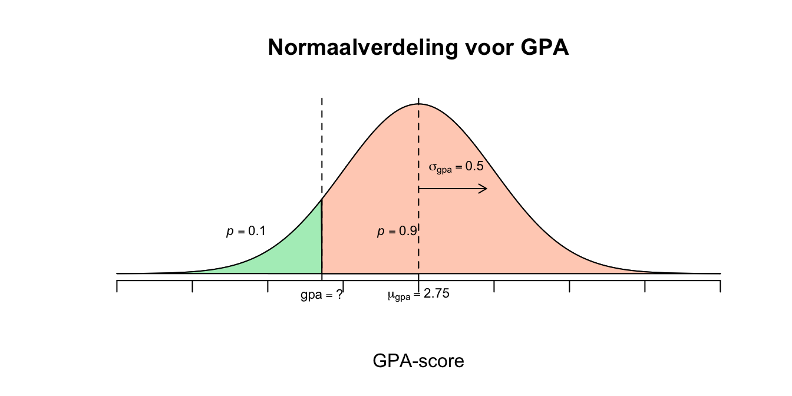
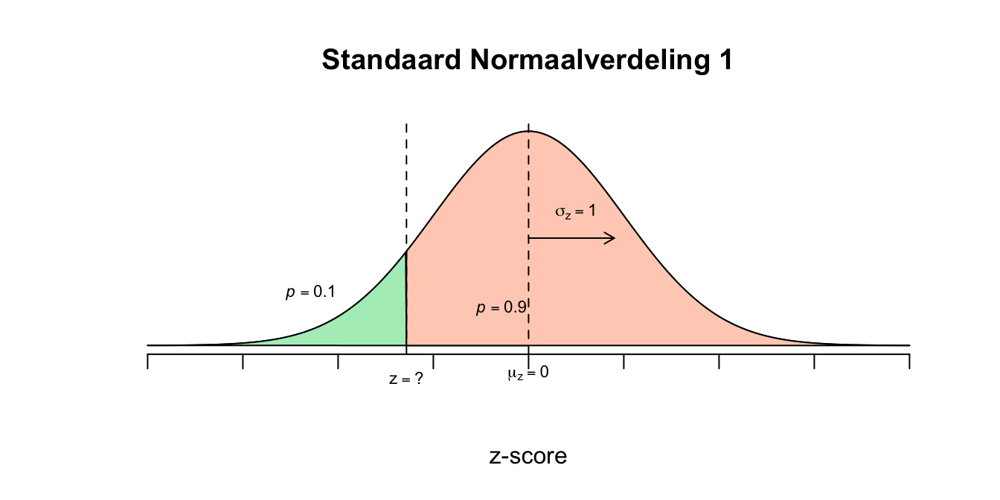
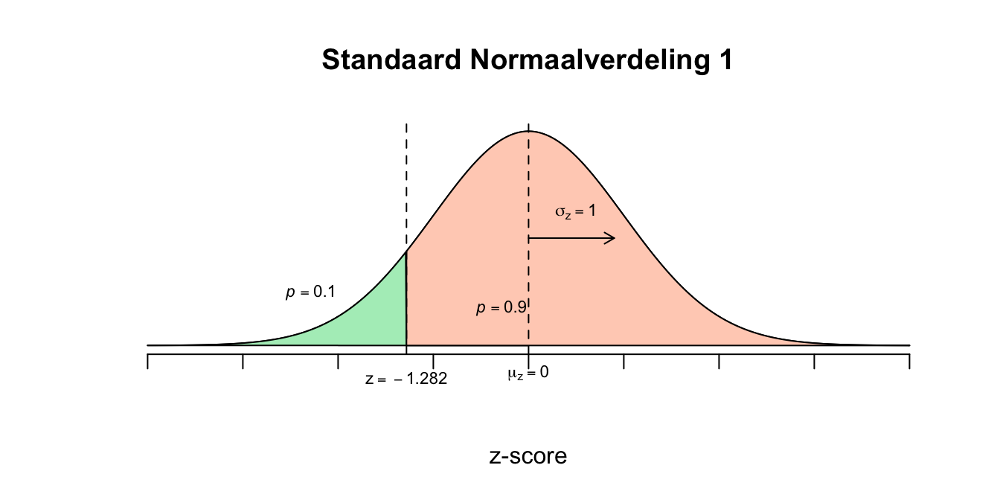
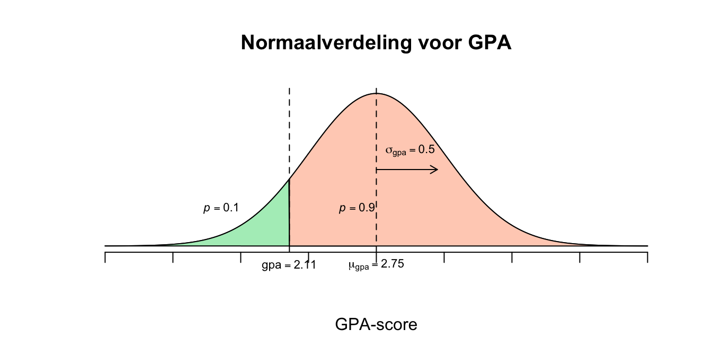
We zijn dus op zoek naar de waarde voor \(x\) zodanig dat precies \(10\) procent van alle \(X\)-waarden daarboven valt. De upper tail of rechterstaart moet dus een oppervlakte hebben van \(p = .10\) \(P(X \geq x) = 0.10\) Hier hebben we geen tabel voor, dus doen we het eerst met \(z\): \(P(Z \geq z) = 0.10\) Opzoeken in de \(z\) of \(t\)-tabel geeft: \(z^{*} = 1.282\) Dit betekent dus dat de waarde voor \(X\) dus precies \(1.282\) standaardafwijkingen (denk lineaaltjes) vanaf het gemiddelde naar rechts ligt, dus lekker wandelen vanuit het gemiddelde: \(X = 2.75 + 1.282 \cdot 0.5 = 3.391\)
Opgaven 7
Van een universiteit in Nederland is bekend dat voor het eerste statistiek tentamen gemiddeld een \(6.7\) wordt behaald. Aangenomen mag worden dat de scores normaal verdeeld zijn met een standaardafwijking van \(1.4\). Jaarlijks doen \(950\) studenten het tentamen. Hoeveel studenten zullen naar verwachting een score hebben tussen de \(5\) en een \(7\)?
Een score van \(5.5\) of hoger, betekent een voldoende (Leiden Universiteit, hoe bedoel je ‘zessen’ cultuur? Gelukkig doen ze in Leiden ook genoeg aan plagiaat en data-setjes opleuken), hoeveel procent van de studenten slaagt niet voor het tentamen en halen dus een onvoldoende?
Hoeveel punten zou de universiteit de studenten kado moeten geven zodanig dat slechts \(5\) procent zou zakken? Hint: Tekenen en bedenk wat het nieuwe gemiddelde zou moeten zijn zodanig dat slechts vijf procent lager scoort dan 5.5. De standaardafwijking voor het tentamencijfer blijft constant en vraag jezelf af (zoek op) hoeveel standaardafwijkingen de score \(5.5\) van het gemiddelde af moet liggen.
Uitwerking 7
- Gegeven: \(X \mathtt{\sim} N(\mu_x = 6.7 ; \sigma_x = 1.4)\). Gevraagd: Hoeveel studenten zullen naar verwachting tussen een \(5\) en een \(7\) scoren. Dus eerste de proportie of kans vinden en dan kunnen we het aantal studenten uitrekenen.
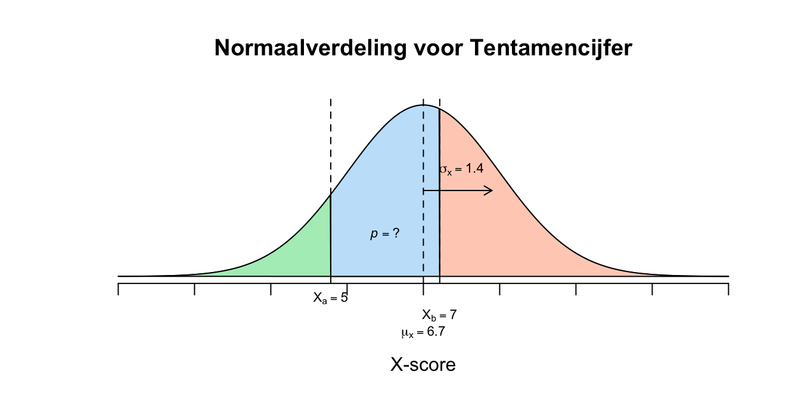
Figuur 2.34: Uitwerking 7.1
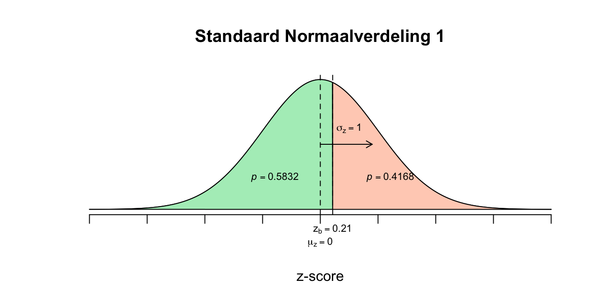
Figuur 2.35: Uitwerking 7.1
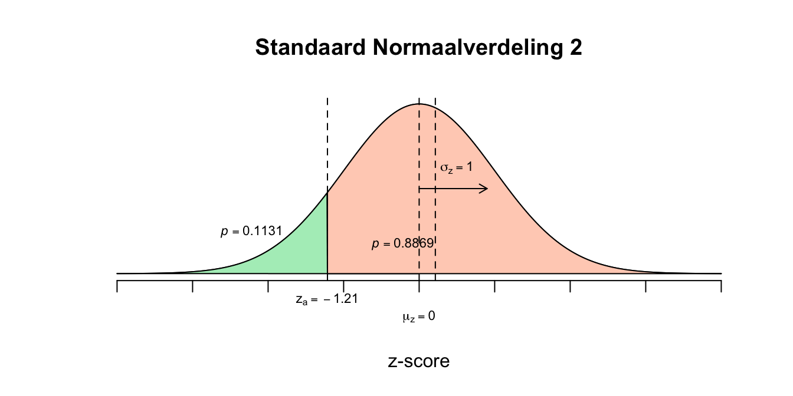
Figuur 2.36: Uitwerking 7.1
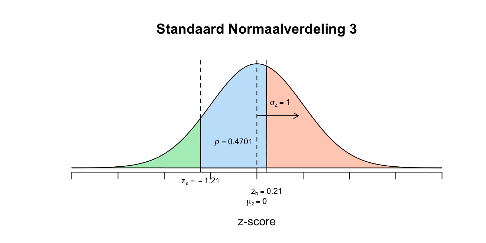
Figuur 2.37: Uitwerking 7.1
- \[P(5 \leq X \leq 7) = P(X \leq 7) − P(X \leq 5)\] \[P(\text{-}1.21 \leq Z \leq 0.21) = P(z \leq 0.21) − P(z ≤ \text{−}1.21) = .5832−.1131 = .4701\] Dus de kans (of proportie) is dus 0.4701 dat iemand een cijfer tussen de \(5\) en \(7\) zal halen, maar er werd om een aantal mensen gevraagd, dus de proportie vermigvuldigen met het totale aantal studenten: \(.4701 \cdot 950 = 446.6\) studenten (eigenlijk naar beneden afronden anders zouden er mensen bijzitten die lager dan een 5 of hoger dan een 7 scoren). Besef trouwens dat ik de berekende \(z\)-waarden heb afgerond en dat dus de opgezochte en gebruikte kansen dus iets afwijken (om precies te zijn zouden we op \(448.8927\) personen moeten uitkomen die tussen de \(5\) en een \(7\) scoren, heb ik zo via andere wegen berekend).
- Gevraagd: \(P(X < 5.5)\), Dus de kans (in percentage) dat iemand lager dan een \(5.5\) voor zijn tentamen haalt.
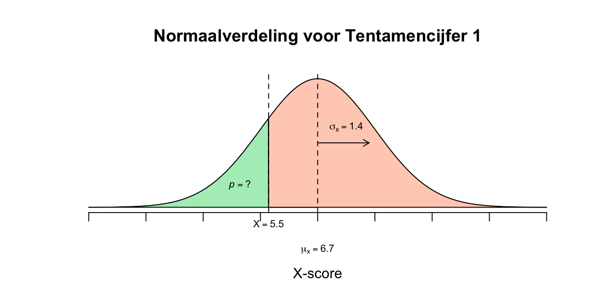
Figuur 2.38: Uitwerking 7.2
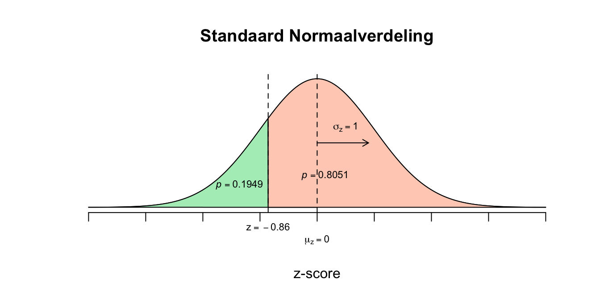
Figuur 2.39: Uitwerking 7.2
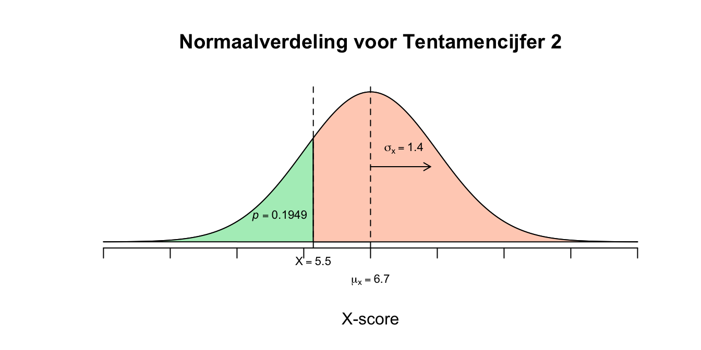
Figuur 2.40: Uitwerking 7.2
- \(P(X < 5.5) = P(X \leq 5.5) = P(z \leq \text{−} 0.86) = 0.1949\) Vervolgens ndeze kans nog keer \(100\) procent doen om het percentage te vinden: \(.1949 \cdot 100\% = 19.49\%\) Dus \(19.5\%\) van de leerlingen haalt een onvoldoende.
- Als we scores veranderen (transformeren) dan veranderen ook sommige statistieken mee (zie ook opgave 1.5). Nu is het gemiddelde voor het tentamen \(6.7\) en als iedereen bijvoorbeeld een halve punt erbij zou krijgen, zou het gemmidelde ook toenemen met een halve punt (\(\mu_{nieuw}= 6.7 + 0.5 = 7.2\)), de standaardafwijking veranderd niet in dit geval (\(\sigma_x\) verandert alleen als de scores worden getransformeerd met een vermenigvuldiging). Je zou voor dit specifieke voorbeeld (\(\mu_{nieuw} = 7.2\)) kunnen kijken (uitrekenen) hoeveel procent van de studenten dan een voldoende haalt en of dat meer dan 95 procent is zoals Leiden Universiteit dat graag wil (of minder dan 5 procent die het niet haalt). Laten we het maar even snel doen meteen, voor het gevoel. Dus even uitgaande van dit specifieke voorbeeld waarbij \(X \mathtt{\sim} N(\mu_x = 7.2 ; \sigma_x = 1.4)\) en de vraag \(P(X < 5.5)\): \[z = \frac{X-\mu_x}{\sigma_x} = \frac{5.5-7.2}{1.4} = \text{-}1.21\] \[P(X < 5.5) = P(z < \text{-}1.21) = 1 - P(z > 1.21) = 0.1131\] Dus met dit nieuwe gemiddelde (\(\mu_x = 7.2\)) zou ongeveer \(11\) procent van de studenten een onvpldoende halen, en dat is te veel! het mocht maximaal \(5\) procent zijn! We zouden natuurlijk het nog een paar keer kunnen proberen en zo bij het correcte nieuwe gemiddelde uitkomen, door trial and error dus tot het goede antwoord komen. We gaan het natuurlijk systematischer aanpakken. Als iedereen in een populatie (of steekproef) \(\mu_{nieuw]\) of het nieuwe gemiddelde is dus – nu nog – onbekend, maar op (of bij) de score \(X=5.5\) moet de tweedeling voor \(5\) en \(95\) procent vallen. Van alle mogelijke scores zou slechts \(5\) procent links van \(5.5\) moeten vallen en \(95\) procent van de studenten zou dan boven de \(5.5\) moeten scoren. Verder weten we eigenlijk nog weinig behalve dat de boel normaal verdeeld is met een standaardafwijking van \(1.40\) en dus dat de score \(X = 5.5\) precies op de tweedeling moet vallen, dus so far: \[X \mathtt{\sim} N(\mu_{nieuw} = ? ; \sigma_x = 1.4)$ én $P(X < 5.5) = .05\]:
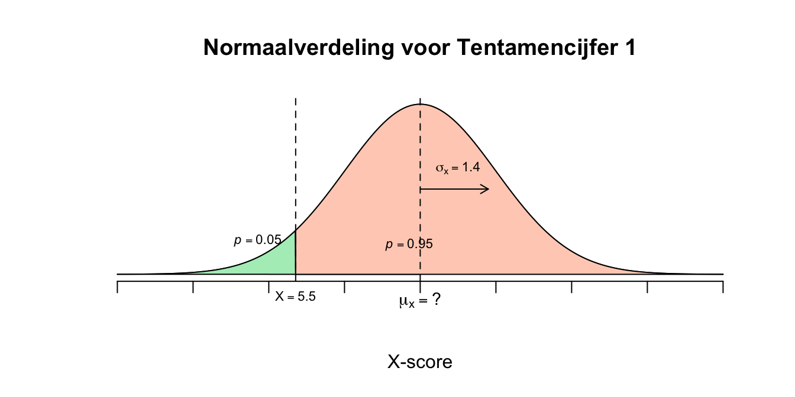
Figuur 2.41: Uitwerking 7.3
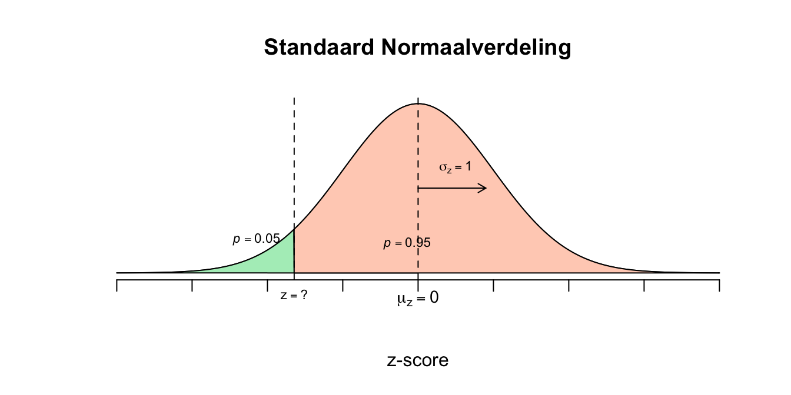
Figuur 2.42: Uitwerking 7.3
- Omdat we de tweedeling weten qua kansen, kunnen we dus ook een \(z\)-waarde opzoeken. Voor de tweedeling \(p = .05\) tegen \(p = .95\) vind je, op basis van de \(t\)-tabel, een bijbehorende \(z\)-waarde van \(1.645\) (met de \(z\)-tabel moet je weer wat afronden en kom je op \(z=1.64\) of \(z=1.65\) uit, ook goed). Wij hebben dus met \(\text{-}1.645\) te maken omdat we links van het midden zitten. Anders gezegd: vanuit het – nu nog – onbekende gemiddelde zouden we \(1.645\) standaardafwijking naar links moeten wandelen om op de juiste score uit te komen (\(X=5.5\)). Of omgedraaid: We moeten vanuit die \(X=5.5\) precies \(1.645\) standaardafwijkingen naar rechts wandelen om bij het nieuwe of onbekende gemiddelde uit te komen. Laten we dat maar meteen doen: \[\mu_{nieuw} = 5.5 + 1.645 \cdot 1.4 = 7.803\] of met de \(z\)-formule kan het natuurlijk ook, je neemt dan wel een hele lange weg: \[z = \frac{X - \mu_x}{\sigma_x}\] nu nog invullen, onze \(z\)-waarde is negatief dus vergeet niet het minteken. \[\text{-}1.645 = \frac{5.5 - \mu_{nieuw}}{1.4}\] \[\frac{5.5 - \mu_{nieuw}}{1.4} = \text{-}1.645\] Nu beide kanten vermenigvuldigen met \(1.4\), \(\frac{5.5 - \mu_{nieuw}}{1.4} \cdot 1.4 = \text{-}1.645 \cdot 1.4\) Dit is te schrijven als: \(\frac{(5.5 - \mu_{nieuw}) \cdot 1.4}{1.4} = \text{-}1.645 \cdot 1.4\) Aan de linkerkant vallen de twee ‘1.4’-tjes tegen elkaar weg, ik doe nog even de extra tussenstapjes: \((5.5 - \mu_{nieuw}) \cdot \frac{1.4}{1.4} = \text{-}1.645 \cdot 1.4\) \((5.5 - \mu_{nieuw}) \cdot 1 = \text{-}1.645 \cdot 1.4\) \((5.5 - \mu_{nieuw}) = \text{-}1.645 \cdot 1.4\) \(5.5 - \mu_{nieuw} = \text{-}1.645 \cdot 1.4\) Nu aan beide zijden er \(5.5\) van aftrekken: \(5.5 - \mu_{nieuw} -5.5 = \text{-}1.645 \cdot 1.4 - 5.5\) wordt: \(\text{-}\mu_{nieuw} = \text{-}7.803\) beide zijden vermenigvuldigen met \(\text{-}1\): \(\text{-}\mu_{nieuw} \cdot \text{-}1 = \text{-}7.803 \cdot \text{-}1\) \(\mu_{nieuw} = 7.803\) (hèhè, tjemig de pemig zeg, wat een weg) Dus als het nieuwe gemiddelde voor het tentamencijfer \(\mu_{nieuw} = 7.8\) zou zijn en de standaardafwijking gewoon nog steeds \(\sigma_x = 1.40\), dan zou slechts \(5\) procent van de studenten een onvoldoende halen (\(X < 5.5\)).Gezien het oude gemiddelde \(6.7\) was, moet dus iedereen er minimaal \(1.1\) tentamenpunt (\(7.8 - 6.7 = 1.1\)) bovenop hun tentamencijfer krijgen zodanig dat maximaal \(5\) procent een onvoldoende haalt en dus minimaal \(95\) procent een voldoende. In deze berekening heb ik trouwens geen rekening gehouden met wat de keuze qua afronden betreft. Wij kwamen uit op \(\mu_{nieuw} = 7.803\) (en dus niet \(\mu_{nieuw} = 7.8\)) dus bij een stijging van \(1.100\) in plaats van \(1.103\) zou dus eigenlijk net iets minder dan \(95\) procent slagen en dat was eigenlijk niet de bedoeling. In het voordeel van Leiden Universteit (en hun accreditatie) kunnen ze dus de boel beter met bijvoorbeeld \(1.2\) tentamenpunt ophogen!
Opgaven 8
Toen ik vijf jaar samen was met mijn zogenaamde levenspartner zei ze toen al dat ze genoeg van me had. Maar hoe serieus moest ik haar toen nemen? Toen, onder mijn vrienden wist ik dat ongeveer \(20\) procent het niet langer dan \(3\) jaar uit hield met hun relatie. Gelukkig was \(30\) procent van mijn vrienden hoopgevend en duurde bij hun een relatie langer dan \(9\) jaar. Ook bleek dat de duur van een relatie een normaalverdeling volgt. Uiteraard waren mijn vrienden niet van invloed op mijn of haar keuzes en gedraagt (gedroeg) elke relatie zich onafhankelijk, dus voor elke relatie betekent dit: Nieuwe ronde, nieuwe relatie, nieuwe kansen. Wat zou de gemiddelde duur van een relatie zijn als \(20\) procent van de mensen het korter uithoudt dan \(3\) jaar en \(20\) procent het juist langer dan \(9\) jaar uithoudt (dus de twee staarten zijn nu dus nog even groot, beide \(p = .20\), en mag je dus nog even in symmetrie denken)?
We hebben te maken met twee overschrijdingskansen die niet gelijk zijn. Het gemiddelde zal dus ook niet in het midden van 3 en 9 jaar liggen. Bij welke grenswaarde ligt het gemiddelde dichterbij en welke grenswaarde is dus het minst extreem?
Bereken de verwachte duur van mijn relatie ofwel de gemiddelde duur van een relatie en de standaardafwijking voor de variabele ‘duur van een relatie’. Ga hier dus uit van de eerder gegeven overschrijdingskansen, de genoemde \(20\) en \(30\) procent.
Uitwerking 2.8
- Omdat beide staarten van de normaal verdeling even groot zijn, beide hebben een oppervlakte van \(0.20\), moet het gemiddelde wel precies in het midden liggen als het om een normaal verdeelde variabele gaat. Of anders gezegd: omdat beide staarten, behorend bij \(X=3\) en \(X=9\), zijn de twee gebeurtenissen even extreem (vanuit het gemiddelde gezien), dus liggen even ver van het midden in de verdeling. Het midden van \(3\) en \(9\) (de twee grenswaarden van de staarten, waarop de overschrijdingskans gegeven is) is ook wel het gemiddelde (of het midden) van die twee, dus tot zover gegeven: \(X \mathtt{\sim} N(\mu_{x} = ? ; \sigma_x = ?)\) en \(P(X \leq 3) = P(X \geq 9)= .20\) Met deze informatie kunnen we vast een schets maken van wat we tot zover weten:
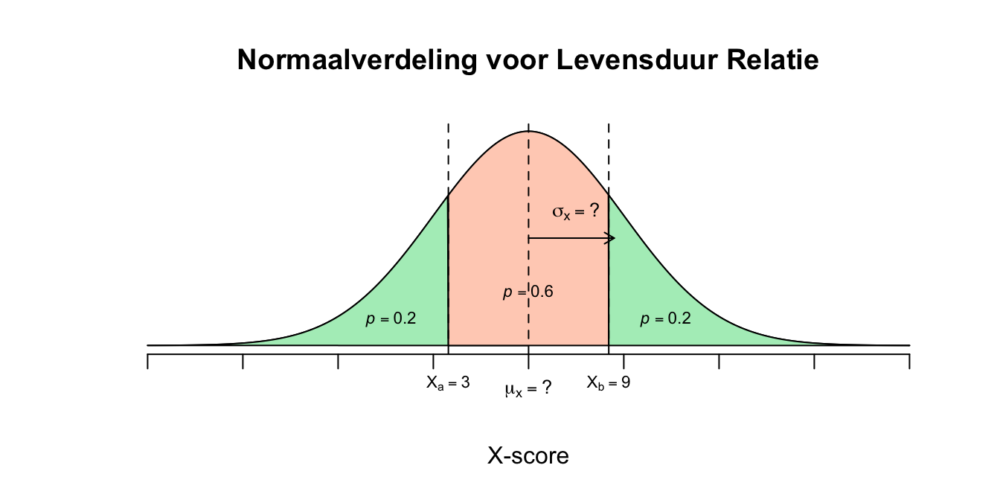
Figuur 2.43: Uitwerking 8.1
- Omdat \(\mu_x\) dus in het midden moet liggen krijgen we: \(\mu_x = \frac{X_a + X_b}{2} = \frac{3 + 9}{2} = 6\) jaar. Dus de gemiddelde duur van een relatie zou in dit geval dus \(\mu_{\text{levensduur relatie}} = 6\) jaar zijn.
- Omdat er een grotere overschrijdingskans is op \(9\) jaar, betekent dat deze waarde makkelijker te overschrijden valt (vanuit het gemiddelde gezien) en dus minder extreem is dan de gebeurtenis \(X = 3\). Dit betekent dat het gemiddelde dichter bij \(X=9\) zal liggen dan en dat 9 dus minder extreem is. In het algemeen: Hoe verder een score verwijderd ligt van het gemiddelde, des te extremer is deze score en zal deze score moeilijker te ‘bereiken’ zijn en heeft daarom een kleinere overschrijdingskans en dus een kleinere (kortere) staart heeft. Ik zeg altijd maar zo: Einstein heeft de kleinste staart, omdat hij het hoogste - en dus et meest extreme - IQ heeft! Laten we de boel even schetsen bij de volgende gegevens: \(X \mathtt{\sim} N(\mu_{x} = ? ; \sigma_x = ?)\), \(P(X \leq 3) = .20\) en \(P(X \geq 9)= .30\)
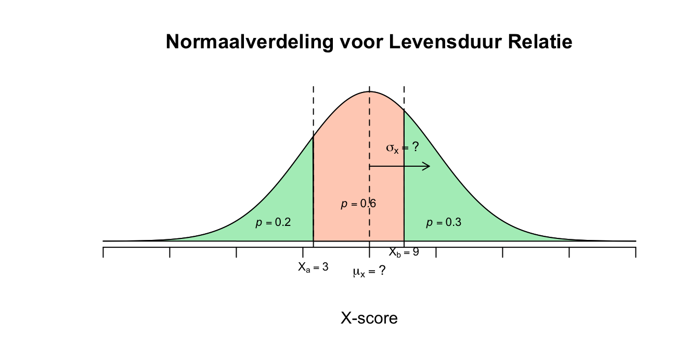
Figuur 2.44: Uitwerking 8.2
- Je ziet dat \(\mu_x\) dus dichter bij \(X=9\) ligt dan bij \(X=6\) en kunnen we dus zeggen dat vanuit het gemiddelde gezien \(X=9\) het minst extreem is.
- Eigenlijk is dit een van de allermoeilijkste vragen, met een aantal stapjes die we zullen moeten nemen om het antwoord te vinden. Ook hier zijn meerdere manieren om dit probleem op te lossen. We zullen het zoveel mogelijk visueel proberen op te lossen. Nog steeds geldt: \(X \mathtt{\sim} N(\mu_{x} = ? ; \sigma_x = ?)\), \(P(X \leq 3) = .20\) en \(P(X \geq 9)= .30\), zie dus ook de normaal verdeling bij vorige opgave (2.8b) We hebben dus alleen twee ruwe \(X\)-waarden, met hun bijbehorende overschrijdingskansen. Via de \(z\)-verdeling vinden we de oplossing. Omdat we de overschrijdingskansen weten, kunnen we dus ook \(z\)-waarden opzoeken (ik gebruik hier de \(z\)-tabel en rond even beetje af:
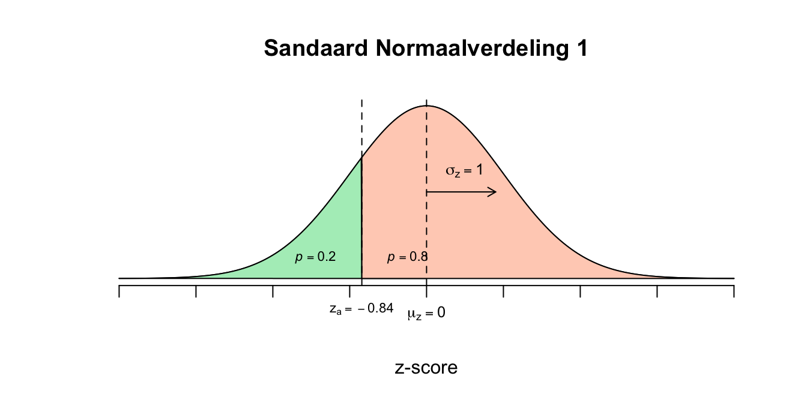
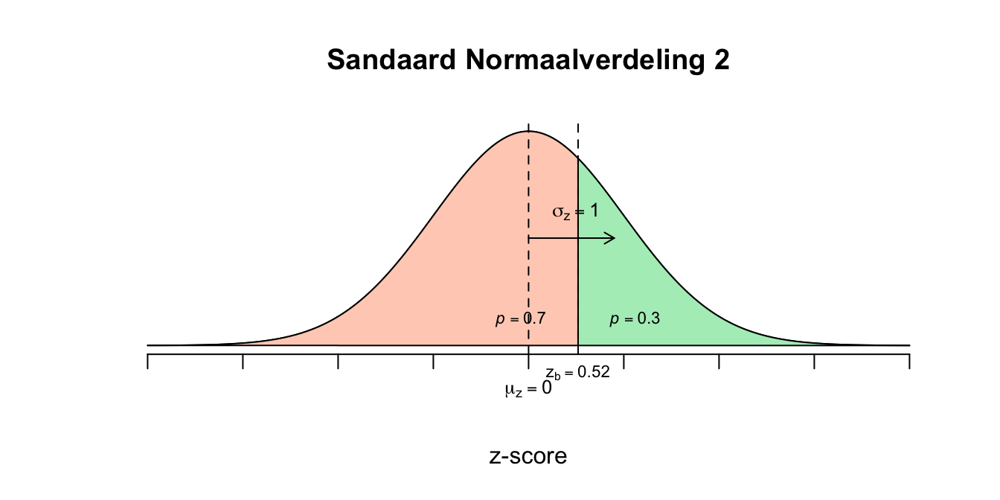
We beginnnen met de waarde van \(\sigma_x\). We weten nu, aan de hand van de gevonden \(z\)-waarden, hoeveel (het aantal) standaardafwijkingen de twee ruwe gebeurtenissen van het gemiddelde verwijderd liggen: Bij \(X=3\) hoort \(z=\text{-}0.84\) en wil dus zeggen dat de gebeurtenis \(X=3\) precies \(0.84\) standaardafwijking links van het gemiddelde (midden) zit (dus bijna \(1\) standaardafwijking ervandaan dus). Bij \(X=9\) hoort \(z=0.52\) en wil dus zeggen dat de gebeurtenis \(X=3\) precies \(0.52\) standaardafwijking rechts van het gemiddelde zit (dus ruim een halve standaardafwijking). We weten nog niet hoe groot de standaardafwijking is, maar we kunnen nu wel bedenken hoeveel standaardafwijkingen je moet ‘wandelen’ om van \(X=3\), via \(\mu_x\), naar \(X=9\) te komen. Het eerste stukje was \(0.84\) keer \(\sigma_x\) en voor het tweede stukje is het \(0.52\) keer \(\sigma_x\). Dus in totaal is dat:
$0.84 _x + 0.52 _x = 1.36 _x $ of in termen van de afstand tussen \(z_a\) en \(z_b\):
\(z_b - z_a = 0.52 - \text{-}0.84 = 0.52 + 0.84 = 1.36\)
Dit wil dus zeggen dat - om van \(X=3\) naar \(X=9\) te wandelen - je \(1.36\) standaardafwijking moet wandelen. Maar hoeveel moet je ‘ruw’ wandelen om van \(X=3\) naar \(X=9\) te wandelen? \(6\) ruwe punten of jaren dus (\(X_b - X_a = 9-3 = 6\)). We kunnen nu dus zeggen dat die ‘gestandaardiseerde’ wandeling (\(1.36 \cdot \sigma_x\)) en de ruwe wandeling (\(6\) jaar) aan elkaar gelijk moeten zijn. dus hieruit volgt een vergelijking met één onbekende (\(\sigma_x\)):
\(1.36 \cdot \sigma_x = 6\) even oplossen door beide kanten door \(1.36\) te delen: \(\frac{1.36 \cdot \sigma_x}{1.36} = \frac{6}{1.36}\) \(\frac{1.36}{1.36} \cdot \sigma_x = 4.4118\) \(1 \cdot \sigma_x = 4.4118\) \(\sigma_x = 4.4118\) ons eerste antwoord, de standaardafwijking voor deze verdeling! Nu nog het gemiddelde vinden. Nu hebben we twee opties, we gaan vanuit \(X=3\) of \(X=9\) naar het gemiddelde wandelen, ik wandel liever naar rechts en start dus vanuit \(X=3\). Vanuit \(X=3\) moet je \(0.84\) keer de standaardafwijking wandelen om bij \(\mu_x\) te komen, let’s do that: \(\mu_x = 3 + 0.84 \cdot \sigma_x = 3 + 0.84 \cdot 4.4118 = 6.705912\) \(\mu_x = 6.71\) Blijkbaar duurt een gemiddelde relatie onder mijn vrienden \(6.71\) jaar (en had ik naar verwachting nog \(1.71\) jaar te gaan). De meer wiskundige oplossing, had natuurlijk ook gekund, maar slaat totaal de plank mis! Ik wil dat je schetst, kijkt en vervolgens schat wat mogelijk antwoorden zouden kunnen zijn.
- Klaar!
Wat is Normaal?
Zo zie je maar dat een schets of tekening en even denken vaak de voorkeur verdient voor het oplossen van een probleem, het geeft je zelfs al van te voren een idee van wat de uitkomst ongeveer zou moeten of kunnen zijn. Bij de strikt wiskundige (algebraïsche) oplossing sluipen en er snel foutjes in en is het vaak heel onduidelijk waar we nu eigenlijk mee bezig zijn. Ben je een überNerd, dan maakt het natuurlijk geen reet uit. Ik ben geen überNerd, hooguit wat slim en lui. Bij mij is dus altijd Regel \(1\): “Don’t get caught (Dexter, the Serial Killer) en teken je dus eerst even de situatie uit”. Natuurlijk wil je Inzicht in de probleemstelling en boeit het antwoord alleen als je er geld mee kunt verdienen of er mensen mee kunt manipuleren (helpen enzo), op school nog even niet dus, daar gaat het om het leer-effect en eigenlijk niet om de output (toetsen) en de cijfers. Ik had lage cijfers op school, ik vond school zwaar debiel en onnodig, gewoon robot werk dus. Ik deed dus ook vrij weinig en zorgde dus wel voor het nodige Inzicht, zodat ik de boel kon berederen tijdens mijn proefwerken. Natuurlijk is tekenen niet altijd makkelijk en zeker niet voor een blinde, maar die heeft misschien weer een beter geheugen en voorstellingsvermogen. Kun jij zeven dingen tegelijk in je hoofdje houden en de verbanden zien? ik niet, maar ik kan het wel tekenen! Een schets is natuurlijk meer dan voldoende en niets meer dan Normaal!